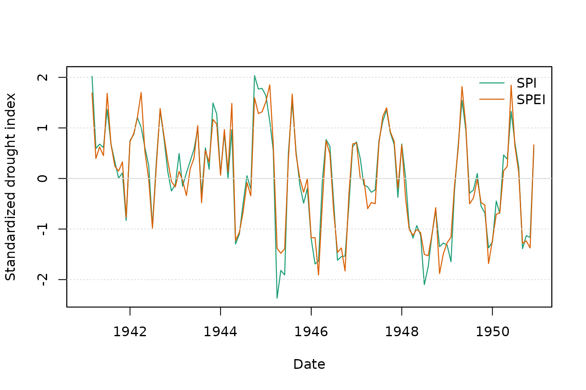
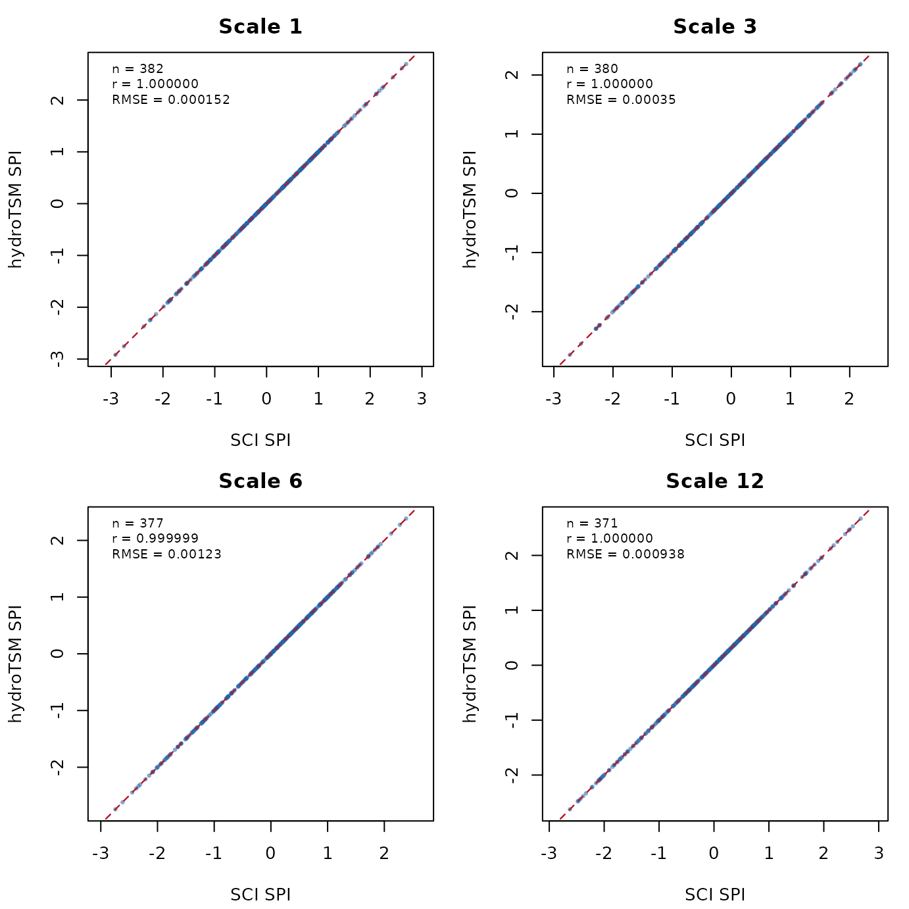
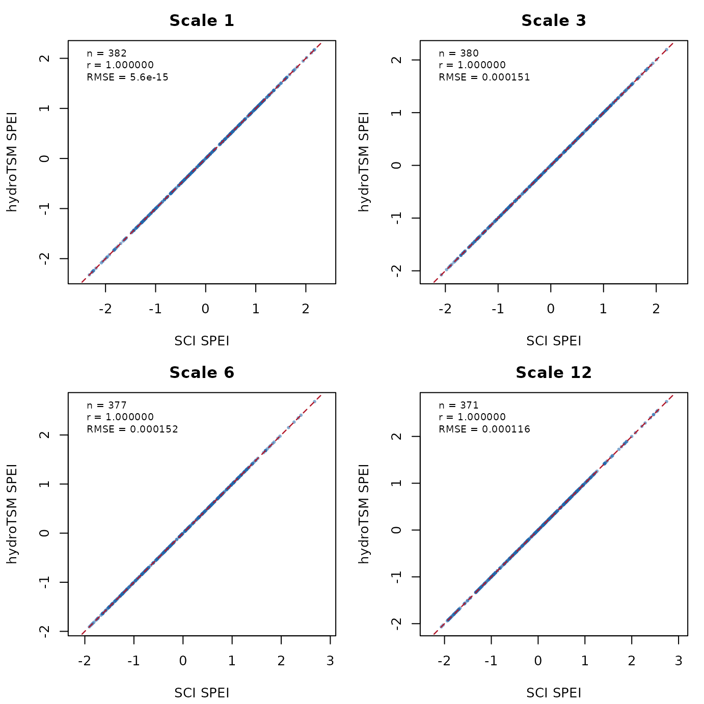
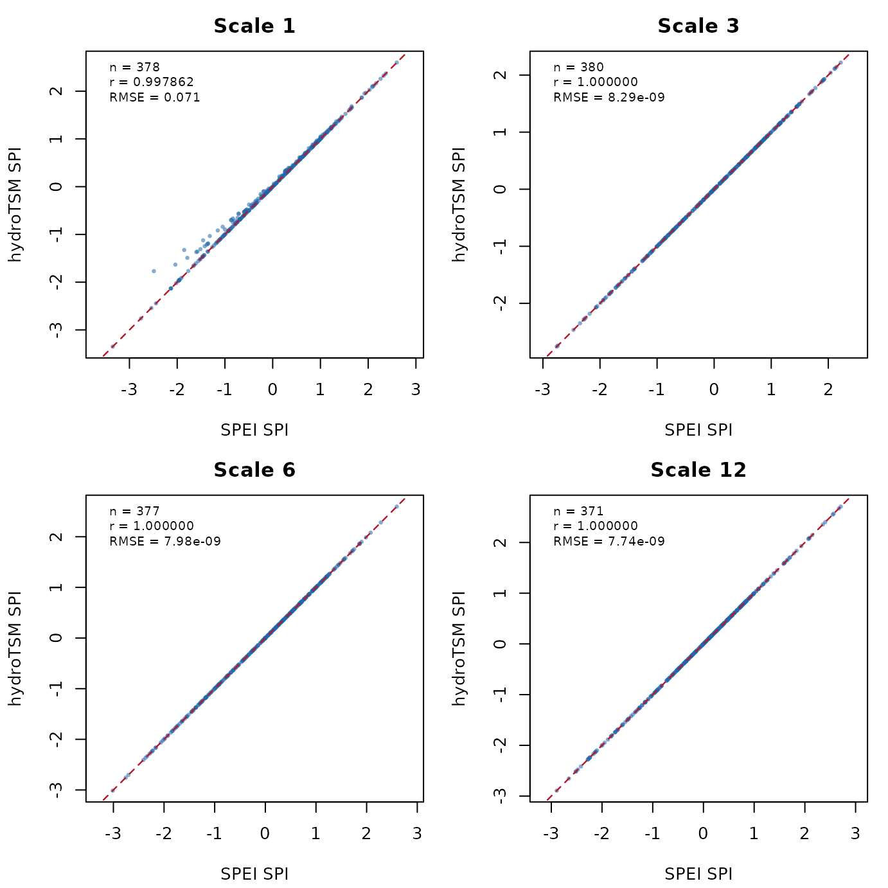
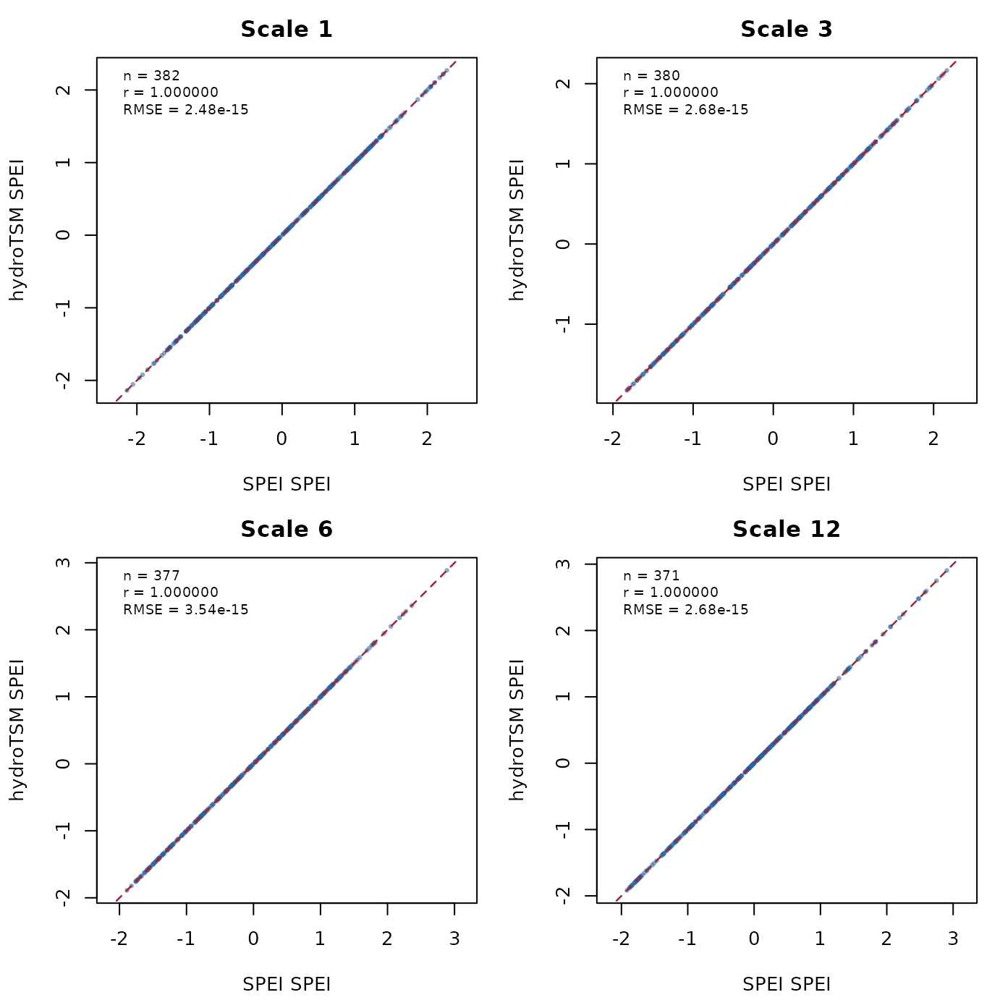

Theory, computation, and validation of SPI and SPEI with hydroTSM
Mauricio Zambrano-Bigiarini
version 1.1, 27-Jul-2026
Source:vignettes/hydroTSM_SPI_SPEI_Vignette.Rmd
hydroTSM_SPI_SPEI_Vignette.RmdPart I: Theoretical background
What SPI and SPEI measure
The Standardized Precipitation Index (SPI) describes how unusual an accumulated precipitation amount is relative to the precipitation climatology for the same location and calendar month. It was introduced as a probability-based, multiscalar index: only precipitation is required, and the accumulation period is selected to represent the memory of the system being studied (McKee et al., 1993; Guttman, 1998; Hayes et al., 1999).
The Standardized Precipitation-Evapotranspiration Index (SPEI) applies the same standardisation principle to climatic water balance,
where is precipitation and is potential evapotranspiration. Consequently, SPEI responds both to water supply and to atmospheric evaporative demand. This makes it useful when temperature variability or long-term warming affects drought severity, but also makes the result sensitive to the selected PET method and the quality of its meteorological inputs (Vicente-Serrano et al., 2010; Beguería et al., 2014).
For either index, let denote monthly precipitation for SPI or monthly water balance for SPEI. A backward-looking value at scale is
where are the kernel weights. A separate probability distribution is fitted to for each calendar month , because a January water balance should be compared with other Januaries rather than with months from a different season. The fitted non-exceedance probability is then mapped to a standard-normal variate:
where is the standard-normal quantile function and is either the fitted continuous distribution or, for zero precipitation, a mixed discrete-continuous distribution. If the probability model is well calibrated, the resulting index has an approximately standard-normal interpretation: zero is near the climatological median, negative values are drier than normal, and positive values are wetter than normal. Standard-normal thresholds of -1, -1.5, and -2 correspond approximately to lower-tail probabilities of 15.9%, 6.7%, and 2.3%, respectively.
SPI and SPEI describe statistical rarity, not drought impact by themselves. The same index value can have different consequences depending on season, exposure, water storage, crop stage, and antecedent conditions.
Temporal scales and system memory
The scale is the number of current and preceding months
contributing to each index value. It is not the duration of an
identified drought event. A drought event may persist for many index
values, and neighbouring values are correlated because their
accumulation windows overlap.
Common interpretations are:
- 1 month: immediate precipitation or water-balance anomaly and rapidly developing meteorological drought;
- 3 months: short seasonal conditions, soil-moisture stress, and rain-fed agricultural response;
- 6 months: seasonal water availability and slower agricultural or surface-water response;
- 12 months: annual water balance, streamflow, reservoir, and groundwater signals; and
- 24 months or longer: persistent hydrological storage deficits.
These are guidelines, not universal definitions. The appropriate scale should be selected against the response time of the variable or impact of interest. Multiscalar interpretation is one of the principal advantages of both indices (Guttman, 1998; Vicente-Serrano et al., 2010). Comparing several scales is often more informative than choosing a single scale in advance.
Why distribution choice matters
The probability model determines the percentile assigned to each accumulated value and therefore directly controls the final index, especially in the tails. A poor distribution can exaggerate or suppress drought severity even when the fitted mean appears reasonable (Stagge et al., 2015). Distribution choice should respect both the support of the data and the empirical shape:
- SPI precipitation is non-negative, usually right-skewed at short scales, and may contain an exact probability mass at zero. Skewness commonly decreases with longer accumulation.
- SPEI water balance can be negative or positive, so distributions with a location parameter and support extending below zero are generally required.
Stagge et al. (2015) evaluated seven SPI candidates (Gamma, Gumbel, logistic, log-logistic, lognormal, normal, and Weibull) and four SPEI candidates (generalized logistic, GEV, normal, and Pearson type III). They found the two-parameter Gamma to be a strong general SPI choice in their European experiment and recommended GEV for SPEI there. The original SPEI formulation used the three-parameter log-logistic distribution, which is represented here by the equivalent generalized-logistic formulation (Vicente-Serrano et al., 2010). These findings should not be treated as universal winners: performance can change with climate, record length, calendar month, accumulation scale, and observational or modelled data (Pieper et al., 2020).
A defensible selection checks every calendar month and scale, with particular attention to the dry tail. Useful diagnostics include Q-Q or P-P plots, empirical versus theoretical drought-category frequencies, tail-sensitive goodness-of-fit statistics, and validation outside the calibration period. Goodness-of-fit critical values must account for estimated parameters; applying an ordinary Kolmogorov-Smirnov reference distribution after fitting parameters to the same sample is not valid without adjustment or resampling.
Why parameter-estimation method matters
Distribution family and parameter estimator are separate decisions. Two implementations can use the same named distribution but produce different indices because their parameter estimates differ.
- Maximum likelihood (
fit="max-lik") selects parameters that maximise the probability of the calibration sample. Under a correct model and standard regularity conditions it is statistically efficient, but it can be sensitive to starting values, outliers, parameter boundaries, and small samples. - Unbiased probability-weighted moments (
fit="ub-pwm") estimate moments that combine observations with their non-exceedance probabilities using unbiased order-statistic weights. PWMs and the related L-moments provide stable estimators for many skewed hydrological distributions (Greenwood et al., 1979; Hosking, 1990). Beguería et al. (2014) recommend unbiased PWM for the SPEI log-logistic model. - Plotting-position PWM (
fit="pp-pwm") replaces the unknown probabilities by empirical plotting positions. hydroTSM uses , matching the constants used by the SPEI package. This was used in the original SPEI formulation, but it is not identical to unbiased PWM and can differ appreciably in the short monthly calibration samples.
There is no estimator that compensates for a badly chosen distribution. Selection should consider convergence, plausibility of parameters, fit in the tails, and sensitivity of the resulting drought classes. Comparisons between packages are fair only when distribution, estimator, accumulation, reference period, zero treatment, and scaling conventions are equivalent.
Theoretical guide to the function arguments
The arguments below separate scientific choices from numerical and output controls. Defaults are intentionally stated because hydroTSM defaults do not always match those of other R packages.
Data, accumulation, and calibration
| argument | applies.to | values.and.default |
|---|---|---|
| x | SPI and SPEI | Numeric monthly zoo series; precipitation for SPI and P - PET for SPEI. The index must be Date, POSIXt, or yearmon and months must be consecutive. |
| scale | SPI and SPEI | Any positive integer not exceeding the series length; no default. It controls the backward-looking memory and must be provided explicitly. |
| kernel | SPI and SPEI | list(type, shift); type is rectangular, triangular, circular, or gaussian and shift is 0,…,scale-1. Default list(type=‘rectangular’, shift=0). |
| ref.start, ref.end | SPI and SPEI | NULL, a Date object, or a character string in YYYY-MM or YYYY-MM-DD format; both default to NULL, which fits the full record. They define the climatology used for parameter estimation, not the output period. |
| zero.threshold | SPI only | Any finite non-negative number; default 0. Values strictly below it become zero before accumulation, allowing a trace-precipitation definition. |
| p0 | SPI and SPEI | TRUE or FALSE; defaults TRUE for SPI and FALSE for SPEI. TRUE represents exact zeros by a point mass plus a continuous positive distribution. |
| p0.center.mass | SPI and SPEI | TRUE or FALSE; default FALSE. With p0=TRUE, TRUE assigns zeros to the centre of their empirical probability mass rather than its upper edge. |
The kernel encodes how memory is distributed within the selected
scale. "rectangular" gives all months equal weight. The
other kernels progressively change the relative influence of older
observations, while shift moves the weighting pattern
within the backward-looking window. A non-rectangular kernel therefore
changes the scientific meaning of the index and should be justified by
the response dynamics being represented.
The reference period defines “normal”. A short period produces uncertain tail parameters because each calendar-month fit has approximately one observation per reference year. A changing reference period also changes the climatology against which drought is measured, so fixed and moving references answer different questions.
Distribution and parameter estimation
| argument | applies.to | values.and.default |
|---|---|---|
| distribution | SPI and SPEI | SPI: gamma (default), gumbel, logis, llogis, lnorm, norm, or weibull. SPEI: genlog (default), gev, norm, or pe3. |
| fit | SPI and SPEI | max-lik (default), ub-pwm, or pp-pwm. It selects how each calendar month’s distribution parameters are estimated. |
| params | SPI and SPEI | NULL (default), a parameter vector, an npar x 12 matrix, or an npar x nseries x 12 array. Supplied values define a fixed probability model and bypass fitting. |
| start.fun | SPI and SPEI | NULL (default) or function(x, distr). It supplies starting parameters to maximum-likelihood optimisation for each month and series. |
| start.fun.fix | SPI and SPEI | TRUE or FALSE; default FALSE. TRUE substitutes starting estimates when optimisation fails; this improves continuity but does not constitute a converged MLE. |
| scaling | SPI and SPEI | sd (default), no, or max. Accumulated data are divided by their standard deviation, left unchanged, or divided by their maximum before fitting to improve numerical conditioning. |
| … | SPI and SPEI | Optional maximum-likelihood controls, principally mledist.par, such as optimiser, bounds, fixed parameters, and optimiser-specific controls. |
params is appropriate when parameters have been
estimated externally, when a common climatology must be applied
consistently, or when an operational system must not refit
retrospectively. Supplied parameters must use the parameter order and
convention documented in ?spi; they apply to unscaled
accumulated data. Therefore, fit, scaling,
start.fun, and start.fun.fix no longer affect
the result when params is supplied.
The accepted parameter names and order are:
gamma=(shape, rate), gumbel=(loc, scale),
logis=(location, scale),
llogis=(shape, scale), lnorm=(meanlog, sdlog),
norm=(mean, sd), weibull=(shape, scale),
genlog=(shape, scale, location),
gev=(loc, scale, shape), and
pe3=(shape, scale, location). Scale and standard-deviation
parameters must be positive; additional distribution-specific
constraints are checked by the function.
scaling is a numerical conditioning device, not a change
to drought theory. With internally estimated location/scale families,
consistent rescaling should not materially alter the standardised
probabilities. It does matter to optimisation stability and must not be
mixed with parameter values calibrated on a different scale.
Missing values, bounds, and returned objects
| argument | applies.to | values.and.default |
|---|---|---|
| sci.limit | SPI and SPEI | Any non-negative number, including Inf (default). Finite values truncate the final index symmetrically to [-sci.limit, sci.limit]. |
| na.rm | SPI and SPEI | TRUE or FALSE; default FALSE. TRUE omits missing calibration values during fitting, but an accumulation window containing NA remains NA. |
| out.type | SPI and SPEI | zoo (default) or numeric. zoo preserves the time index and column names; numeric returns a vector or matrix. |
| verbose | SPI and SPEI | TRUE or FALSE; default FALSE. TRUE emits bracketed progress messages and does not change the calculation. |
| warn | SPI and SPEI | TRUE or FALSE; default TRUE. FALSE suppresses fitting and transformation warnings but does not repair failed estimates. |
Finite sci.limit values can prevent unstable
extrapolation from producing implausibly large magnitudes in a short
calibration record (Stagge et al., 2015). Truncation is a reporting
safeguard, not an uncertainty estimate: several observations can be
assigned the same bound, and the true tail probability remains
uncertain.
Part II: Practical use and package comparisons
The spi() and spei() functions calculate
standardized drought indices from complete monthly zoo
series. Their production calculations use base R and do not require the
SCI, SPEI, or lmomco packages.
This practical part has two goals:
- explain the main hydroTSM workflows for SPI and SPEI; and
- document reproducible comparisons with SCI and SPEI at accumulation scales 1, 3, 6, and 12.
The comparison section distinguishes equivalent computations from comparisons that use different fitting methods or zero-frequency treatments. A high correlation in a non-equivalent comparison is useful descriptive information, but is not evidence of numerical reproduction under identical conditions.
Differences from the SPEI and SCI packages
At the time of this benchmark, the CRAN versions were SPEI 1.8.1 and SCI 1.0-3. The comparison below concerns their documented public interfaces and the hydroTSM 0.8-8 implementation, rather than suggesting that one design is preferable for every workflow.
| aspect | hydroTSM | SPEI 1.8.1 | SCI 1.0-3 |
|---|---|---|---|
| Primary interface | Direct spi() and spei() functions. | Direct spi() and spei(); spi() is a wrapper around spei(). | Separate fitSCI() and transformSCI() steps. |
| Input and result | Consecutive monthly zoo input; returns zoo or numeric values directly. | Vector, matrix, data frame, or ts-like input; returns a spei object with fitted values and coefficients. | Default methods operate on a monthly numeric univariate series plus first.mon; transformation returns numeric values. |
| Default calculation | scale is required; Gamma/p0 for SPI, genlog/no p0 for SPEI; max-lik fitting. | scale is required; Gamma for SPI, log-Logistic for SPEI; ub-pwm fitting. | time.scale, distribution, and p0 are explicit; fitting is maximum likelihood. |
| Distributions | All seven SPI and four SPEI candidates evaluated by Stagge et al. (2015). | Gamma, log-Logistic, and PearsonIII in the drought-index interface. | General SCI engine; bundled starting estimators cover nine named distributions and custom distributions can be supplied. |
| Parameter estimation | max-lik, ub-pwm, and pp-pwm; custom starts, fallback starts, or supplied parameters. | ub-pwm, pp-pwm, and max-lik labels; available behaviour depends on distribution and data; supplied parameters supported. | Maximum likelihood with L-moment/moment starting estimates and custom start/fallback controls. |
| Zero and tail controls | zero.threshold for SPI; p0, centred zero mass, and symmetric sci.limit for either wrapper. | The spi()/spei() signatures do not expose zero.threshold, centred-zero-mass, or sci.limit controls. | p0, centred zero mass, scaling, and sci.limit are explicit; no zero.threshold argument. |
| PET calculation | Expects P - PET for spei(); PET must be computed separately. | Package includes Thornthwaite, Hargreaves, and Penman PET functions. | Expects the climate variable or P - PET to be prepared separately. |
| Fitted-model information | Returns the index, not a fitted-model object. | Returns coefficients, fitted values, settings, and optional input in a spei object. | fitSCI() returns monthly parameters and diagnostic flags for later transformation. |
| Runtime dependencies | Distribution fitting and optimisation use base R; no SCI, SPEI, lmomco, fitdistrplus, or evd dependency. | Imports lmomco, lmom, TLMoments, reshape, ggplot2, checkmate, zoo, and lubridate. | Depends on fitdistrplus and lmomco; evd is suggested. |
The most important comparison consequence is the estimator default:
hydroTSM uses maximum likelihood, whereas SPEI defaults to unbiased PWM
and SCI fits by maximum likelihood. Equivalent numerical comparisons
must therefore set fit explicitly. The generalized-logistic
model used by hydroTSM and SCI for SPEI is functionally equivalent to
the three-parameter log-logistic formulation used by the SPEI package,
but parameter names and signs must be mapped consistently when
parameters are supplied.
The current CRAN package descriptions and manuals are available at https://CRAN.R-project.org/package=SPEI and https://CRAN.R-project.org/package=SCI.
Basic usage
library(hydroTSM)
#> Loading required package: zoo
#>
#> Attaching package: 'zoo'
#> The following objects are masked from 'package:base':
#>
#> as.Date, as.Date.numericThe main argument is a numeric monthly zoo object with a
Date, POSIXt, or yearmon index.
The observations must cover consecutive months.
The following example uses monthly precipitation from one station in
the EbroPPtsMonthly dataset.
data(EbroPPtsMonthly)
pcp <- zoo::zoo(EbroPPtsMonthly$P9001, EbroPPtsMonthly$Date)
head(pcp)
#> 1941-01-01 1941-02-01 1941-03-01 1941-04-01 1941-05-01 1941-06-01
#> 311.6 158.9 91.2 39.5 135.3 41.7SPI
scale must be provided explicitly. With
scale=12, spi() uses a Gamma distribution,
maximum-likelihood parameter estimation, and a mixed probability at
zero:
spi12 <- spi(pcp, scale=12, warn=FALSE)
head(spi12, 15)
#> 1941-01-01 1941-02-01 1941-03-01 1941-04-01 1941-05-01 1941-06-01 1941-07-01 1941-08-01
#> NA NA NA NA NA NA NA NA
#> 1941-09-01 1941-10-01 1941-11-01 1941-12-01 1942-01-01 1942-02-01 1942-03-01
#> NA NA NA 1.4114490 0.7628638 0.7692549 1.0063587The accumulation scale is changed with scale. Trace
precipitation can be treated as zero before accumulation with
zero.threshold:
spi1 <- spi(pcp, scale=1, zero.threshold=0.1, warn=FALSE)
spi3 <- spi(pcp, scale=3, zero.threshold=0.1, warn=FALSE)
spi6 <- spi(pcp, scale=6, zero.threshold=0.1, warn=FALSE)The controls for low and zero precipitation have separate purposes:
-
zero.thresholdchanges monthly values strictly below the threshold to zero; -
p0=TRUEuses a mixed distribution with a point probability at zero; -
p0.center.mass=TRUEuses the centered zero-mass estimator; and -
sci.limitbounds the final standardized index.
For example:
SPEI
spei() expects monthly climatic water balance, normally
precipitation minus potential evapotranspiration. Its defaults select
the generalized-logistic distribution and do not use a zero-probability
mixture.
For illustration, a deterministic seasonal PET series is constructed below:
month.number <- as.integer(format(zoo::index(pcp), "%m"))
pet <- zoo::zoo(
60 + 35 * sin(2 * pi * (month.number - 1) / 12),
zoo::index(pcp)
)
water.balance <- pcp - pet
spei3 <- spei(water.balance, scale=3, warn=FALSE)
head(spei3)
#> 1941-01-01 1941-02-01 1941-03-01 1941-04-01 1941-05-01 1941-06-01
#> NA NA 1.6907612 0.3953445 0.6236039 0.4519379SPI and SPEI retain the input time index. Initial values are
NA when a complete accumulation window is not yet
available.
indices <- zoo::merge.zoo(SPI=spi3, SPEI=spei3)
plot(
indices, plot.type="single", col=c("#1b9e77", "#d95f02"), lwd=1.2,
xlab="Date", ylab="Standardized drought index"
)
abline(h=c(-2, -1, 0, 1, 2), col="grey85", lty=c(3, 3, 1, 3, 3))
legend(
"topright", legend=colnames(indices),
col=c("#1b9e77", "#d95f02"), lty=1, lwd=1.2, bty="n"
)
Figure 1. Example three-month SPI and SPEI series.
Distributions and parameter estimation
The supported distributions are those evaluated for SPI and SPEI by
Stagge et al. (2015). The parameter column shows the required order when
params is supplied without names.
| argument | distribution | parameters |
|---|---|---|
| gamma | Gamma | shape, rate |
| gumbel | Gumbel | loc, scale |
| logis | logistic | location, scale |
| llogis | log-logistic | shape, scale |
| lnorm | lognormal | meanlog, sdlog |
| norm | normal | mean, sd |
| weibull | Weibull | shape, scale |
| argument | distribution | parameters |
|---|---|---|
| genlog | generalized logistic | shape, scale, location |
| gev | GEV | loc, scale, shape |
| norm | normal | mean, sd |
| pe3 | Pearson type III | shape, scale, location |
Three estimation methods are available:
-
fit="max-lik": maximum likelihood; -
fit="ub-pwm": unbiased probability-weighted moments; and -
fit="pp-pwm": plotting-position probability-weighted moments.
For example:
spi3.mle <- spi(pcp, scale=3, fit="max-lik", warn=FALSE)
spi3.ub <- spi(pcp, scale=3, fit="ub-pwm", warn=FALSE)
spi3.pp <- spi(pcp, scale=3, fit="pp-pwm", warn=FALSE)Reference periods
Distribution parameters can be calibrated over a subperiod and then applied to the complete series:
spi3.reference <- spi(
pcp, scale=3,
ref.start="1943-01", ref.end="1948-12",
warn=FALSE
)Accumulation is performed before the reference-period subset is
selected. Therefore, an accumulated value at the start of the reference
period can use earlier observations from x. Character
references can also include a day, for example
"1943-01-01", or be supplied as Date objects.
The day component is only used to identify the calendar month.
Supplied parameters
params bypasses parameter fitting. It accepts:
- a vector reused for every calendar month and series;
- an
nparby 12 matrix of monthly parameters, reused for every series; or - an
nparbynseriesby 12 array.
Named parameters are reordered automatically. Supplied parameters
refer to the unscaled accumulated data, so scaling is
ignored.
Vector example: the same normal parameter set is reused for every calendar month and every series.
spei.fixed.vector <- spei(
water.balance, scale=1, distribution="norm",
params=c(mean=0, sd=40), warn=FALSE
)
head(spei.fixed.vector)
#> 1941-01-01 1941-02-01 1941-03-01 1941-04-01 1941-05-01 1941-06-01
#> 6.28999996 2.03500000 0.02222777 -1.38750000 1.12472777 -0.89500000Matrix example: each calendar month receives its own parameter set, reused for all series.
monthly.normal.params <- rbind(
mean=seq(-10, 10, length.out=12),
sd=rep(40, 12)
)
spei.fixed.monthly <- spei(
water.balance, scale=1, distribution="norm",
params=monthly.normal.params, warn=FALSE
)
head(spei.fixed.monthly)
#> 1941-01-01 1941-02-01 1941-03-01 1941-04-01 1941-05-01 1941-06-01
#> 6.5400001 2.2395455 0.1813187 -1.2738636 1.1929096 -0.8722727Array example: each series and calendar month receives its own parameter set.
water.balance.two <- zoo::merge.zoo(
stationA=water.balance,
stationB=water.balance + 5
)
array.normal.params <- array(
NA_real_, dim=c(2, 2, 12),
dimnames=list(c("mean", "sd"), colnames(water.balance.two), month.abb)
)
array.normal.params["mean", "stationA", ] <- 0
array.normal.params["mean", "stationB", ] <- 5
array.normal.params["sd", , ] <- 40
spei.fixed.array <- spei(
water.balance.two, scale=1, distribution="norm",
params=array.normal.params, warn=FALSE
)
head(spei.fixed.array)
#> stationA stationB
#> 1941-01-01 6.28999996 6.28999996
#> 1941-02-01 2.03500000 2.03500000
#> 1941-03-01 0.02222777 0.02222777
#> 1941-04-01 -1.38750000 -1.38750000
#> 1941-05-01 1.12472777 1.12472777
#> 1941-06-01 -0.89500000 -0.89500000For SPI, p0=TRUE still estimates the monthly zero
probability from the reference data when continuous-distribution
parameters are supplied.
Custom maximum-likelihood starting values
start.fun follows the SCI interface and is called once
for each calendar month and series as start.fun(x, distr).
The default NULL uses hydroTSM’s internal base-R
estimator.
normal.start <- function(x, distr) {
c(mean=mean(x), sd=stats::sd(x))
}
spei3.custom <- spei(
water.balance, scale=3, distribution="norm",
fit="max-lik", start.fun=normal.start,
start.fun.fix=FALSE, warn=FALSE
)When optimization fails, start.fun.fix=FALSE returns
NA for the affected month. Setting it to TRUE
retains the initial values, which may be useful for continuity but
should not be interpreted as a converged maximum-likelihood fit.
Comparison design
The objective is to compare the SPI and SPEI series computed by the
current hydroTSM implementation with series computed by the SPEI and SCI
packages. The comparisons are made independently for accumulation scales
1, 3, 6, and 12 and for hydroTSM fit="max-lik",
fit="pp-pwm", and fit="ub-pwm".
The benchmark uses the Wichita monthly dataset distributed with SPEI. Climatic water balance was calculated with Thornthwaite PET at latitude 37.6475 degrees north. All implementations used a rectangular kernel and the full record.
The package versions and data period used to create the bundled benchmark are:
| field | value |
|---|---|
| generated | 2026-07-27 |
| hydroTSM | 0.8-8 |
| SCI | 1.0.3 |
| SPEI | 1.8.1 |
| R | 4.6.0 |
| data | SPEI::wichita |
| period | 1980-01 to 2011-10 |
| observations | 382 |
| PET | Thornthwaite; latitude 37.6475 degrees north |
All tables and plots use hydroTSM as the first series. The benchmark uses:
- Gamma with mixed zero probability for SPI;
- generalized logistic/log-logistic for SPEI;
-
scaling="sd"for hydroTSM and SCI; - scales 1, 3, 6, and 12; and
- all three hydroTSM fitting methods.
SCI supplies the maximum-likelihood reference. It has no
fit argument corresponding to hydroTSM’s PWM alternatives,
so comparisons of SCI with ub-pwm or pp-pwm
are descriptive rather than equivalent.
For SPEI 1.8.1, the same fit argument was requested from
the package. ub-pwm produced finite results. In this
dataset, the max-lik and pp-pwm runs produced
no finite index values, so those cases are reported as not computable
rather than assigned an artificial error statistic.
At scale 1, Wichita contains exact zero precipitation. The two
packages treat those zero values differently in this configuration, so
the scale-1 SPI comparison with SPEI is not fully equivalent. At scales
3, 6, and 12 there are no zero accumulated totals and the
ub-pwm Gamma comparison is equivalent.
Independent comparison tables
Each table fixes one hydroTSM index and one hydroTSM fitting method,
then compares that hydroTSM series separately with SCI and SPEI at
scales 1, 3, 6, and 12. The hydroTSM result column
identifies the series produced by the current hydroTSM function. The
reference result column identifies the external package
series used as the comparator. Both columns state the package, index,
distribution, and fitting method.
The status column identifies the conditions behind each
row. Fair means the distribution, fitting method,
accumulation, reference period, scaling convention, and zero treatment
are equivalent for the comparison being made. Other status values
identify why the row is descriptive rather than a strict reproduction
test. The nonfinite hydroTSM/reference column reports the
number of non-finite values in each input series before pairwise metrics
are calculated.
SPI: fit="max-lik"
Rows use the full Wichita record, a rectangular kernel,
scaling="sd" for hydroTSM and SCI, and the distribution
named in the result columns.
| scale | hydroTSM result | reference result | status | pairs | correlation | RMSE | MAE | max.error | nonfinite hydroTSM/reference |
|---|---|---|---|---|---|---|---|---|---|
| 1 | hydroTSM; SPI; gamma; max-lik | SCI; SPI; gamma; max-lik | Fair | 382 | 1.0000000 | 0.0001519 | 0.0001113 | 0.0006126 | 0 / 0 |
| 1 | hydroTSM; SPI; gamma; max-lik | SPEI; SPI; Gamma; max-lik | No finite reference values | 0 | NA | NA | NA | NA | 0 / 382 |
| 3 | hydroTSM; SPI; gamma; max-lik | SCI; SPI; gamma; max-lik | Fair | 380 | 0.9999999 | 0.0003499 | 0.0002739 | 0.0010764 | 2 / 2 |
| 3 | hydroTSM; SPI; gamma; max-lik | SPEI; SPI; Gamma; max-lik | No finite reference values | 0 | NA | NA | NA | NA | 2 / 382 |
| 6 | hydroTSM; SPI; gamma; max-lik | SCI; SPI; gamma; max-lik | Fair | 377 | 0.9999993 | 0.0012310 | 0.0007004 | 0.0063191 | 5 / 5 |
| 6 | hydroTSM; SPI; gamma; max-lik | SPEI; SPI; Gamma; max-lik | No finite reference values | 0 | NA | NA | NA | NA | 5 / 382 |
| 12 | hydroTSM; SPI; gamma; max-lik | SCI; SPI; gamma; max-lik | Fair | 371 | 0.9999996 | 0.0009383 | 0.0006992 | 0.0036331 | 11 / 11 |
| 12 | hydroTSM; SPI; gamma; max-lik | SPEI; SPI; Gamma; max-lik | No finite reference values | 0 | NA | NA | NA | NA | 11 / 382 |
| 1 | hydroTSM; SPI; gamma; pp-pwm | SCI; SPI; gamma; max-lik | Different fitting methods | 382 | 0.9945497 | 0.1107620 | 0.0716189 | 0.4216345 | 0 / 0 |
| 1 | hydroTSM; SPI; gamma; pp-pwm | SPEI; SPI; Gamma; pp-pwm | No finite reference values | 0 | NA | NA | NA | NA | 0 / 382 |
| 3 | hydroTSM; SPI; gamma; pp-pwm | SCI; SPI; gamma; max-lik | Different fitting methods | 380 | 0.9994337 | 0.0350645 | 0.0232709 | 0.1514544 | 2 / 2 |
| 3 | hydroTSM; SPI; gamma; pp-pwm | SPEI; SPI; Gamma; pp-pwm | No finite reference values | 0 | NA | NA | NA | NA | 2 / 382 |
| 6 | hydroTSM; SPI; gamma; pp-pwm | SCI; SPI; gamma; max-lik | Different fitting methods | 377 | 0.9990121 | 0.0446591 | 0.0299962 | 0.1928399 | 5 / 5 |
| 6 | hydroTSM; SPI; gamma; pp-pwm | SPEI; SPI; Gamma; pp-pwm | No finite reference values | 0 | NA | NA | NA | NA | 5 / 382 |
| 12 | hydroTSM; SPI; gamma; pp-pwm | SCI; SPI; gamma; max-lik | Different fitting methods | 371 | 0.9991394 | 0.0473254 | 0.0318784 | 0.1705649 | 11 / 11 |
| 12 | hydroTSM; SPI; gamma; pp-pwm | SPEI; SPI; Gamma; pp-pwm | No finite reference values | 0 | NA | NA | NA | NA | 11 / 382 |
| 1 | hydroTSM; SPI; gamma; ub-pwm | SCI; SPI; gamma; max-lik | Different fitting methods | 382 | 0.9944339 | 0.1086218 | 0.0722700 | 0.4317486 | 0 / 0 |
| 1 | hydroTSM; SPI; gamma; ub-pwm | SPEI; SPI; Gamma; ub-pwm | Different zero treatment | 378 | 0.9978624 | 0.0710284 | 0.0220714 | 0.7196583 | 0 / 4 |
| 3 | hydroTSM; SPI; gamma; ub-pwm | SCI; SPI; gamma; max-lik | Different fitting methods | 380 | 0.9994135 | 0.0344074 | 0.0225190 | 0.1973298 | 2 / 2 |
| 3 | hydroTSM; SPI; gamma; ub-pwm | SPEI; SPI; Gamma; ub-pwm | Fair | 380 | 1.0000000 | 0.0000000 | 0.0000000 | 0.0000000 | 2 / 2 |
| 6 | hydroTSM; SPI; gamma; ub-pwm | SCI; SPI; gamma; max-lik | Different fitting methods | 377 | 0.9990477 | 0.0464925 | 0.0262307 | 0.2710078 | 5 / 5 |
| 6 | hydroTSM; SPI; gamma; ub-pwm | SPEI; SPI; Gamma; ub-pwm | Fair | 377 | 1.0000000 | 0.0000000 | 0.0000000 | 0.0000000 | 5 / 5 |
| 12 | hydroTSM; SPI; gamma; ub-pwm | SCI; SPI; gamma; max-lik | Different fitting methods | 371 | 0.9991450 | 0.0443540 | 0.0271500 | 0.2698663 | 11 / 11 |
| 12 | hydroTSM; SPI; gamma; ub-pwm | SPEI; SPI; Gamma; ub-pwm | Fair | 371 | 1.0000000 | 0.0000000 | 0.0000000 | 0.0000000 | 11 / 11 |
| 1 | hydroTSM; SPEI; genlog; max-lik | SCI; SPEI; genlog; max-lik | Fair | 382 | 1.0000000 | 0.0000000 | 0.0000000 | 0.0000000 | 0 / 0 |
| 1 | hydroTSM; SPEI; genlog; max-lik | SPEI; SPEI; log-Logistic; max-lik | No finite reference values | 0 | NA | NA | NA | NA | 0 / 382 |
| 3 | hydroTSM; SPEI; genlog; max-lik | SCI; SPEI; genlog; max-lik | Fair | 380 | 1.0000000 | 0.0001508 | 0.0001193 | 0.0004576 | 2 / 2 |
| 3 | hydroTSM; SPEI; genlog; max-lik | SPEI; SPEI; log-Logistic; max-lik | No finite reference values | 0 | NA | NA | NA | NA | 2 / 382 |
| 6 | hydroTSM; SPEI; genlog; max-lik | SCI; SPEI; genlog; max-lik | Fair | 377 | 1.0000000 | 0.0001518 | 0.0001153 | 0.0009990 | 5 / 5 |
| 6 | hydroTSM; SPEI; genlog; max-lik | SPEI; SPEI; log-Logistic; max-lik | No finite reference values | 0 | NA | NA | NA | NA | 5 / 382 |
| 12 | hydroTSM; SPEI; genlog; max-lik | SCI; SPEI; genlog; max-lik | Fair | 371 | 1.0000000 | 0.0001156 | 0.0000931 | 0.0003654 | 11 / 11 |
| 12 | hydroTSM; SPEI; genlog; max-lik | SPEI; SPEI; log-Logistic; max-lik | No finite reference values | 0 | NA | NA | NA | NA | 11 / 382 |
| 1 | hydroTSM; SPEI; genlog; pp-pwm | SCI; SPEI; genlog; max-lik | Different fitting methods | 382 | 0.9944417 | 0.1114665 | 0.0733363 | 0.6208688 | 0 / 0 |
| 1 | hydroTSM; SPEI; genlog; pp-pwm | SPEI; SPEI; log-Logistic; pp-pwm | No finite reference values | 0 | NA | NA | NA | NA | 0 / 382 |
| 3 | hydroTSM; SPEI; genlog; pp-pwm | SCI; SPEI; genlog; max-lik | Different fitting methods | 380 | 0.9986465 | 0.0625231 | 0.0446514 | 0.3408091 | 2 / 2 |
| 3 | hydroTSM; SPEI; genlog; pp-pwm | SPEI; SPEI; log-Logistic; pp-pwm | No finite reference values | 0 | NA | NA | NA | NA | 2 / 382 |
| 6 | hydroTSM; SPEI; genlog; pp-pwm | SCI; SPEI; genlog; max-lik | Different fitting methods | 377 | 0.9989651 | 0.0558998 | 0.0448326 | 0.1819346 | 5 / 5 |
| 6 | hydroTSM; SPEI; genlog; pp-pwm | SPEI; SPEI; log-Logistic; pp-pwm | No finite reference values | 0 | NA | NA | NA | NA | 5 / 382 |
| 12 | hydroTSM; SPEI; genlog; pp-pwm | SCI; SPEI; genlog; max-lik | Different fitting methods | 371 | 0.9993944 | 0.0395628 | 0.0303868 | 0.1788221 | 11 / 11 |
| 12 | hydroTSM; SPEI; genlog; pp-pwm | SPEI; SPEI; log-Logistic; pp-pwm | No finite reference values | 0 | NA | NA | NA | NA | 11 / 382 |
| 1 | hydroTSM; SPEI; genlog; ub-pwm | SCI; SPEI; genlog; max-lik | Different fitting methods | 382 | 0.9932742 | 0.1182039 | 0.0686749 | 0.6962337 | 0 / 0 |
| 1 | hydroTSM; SPEI; genlog; ub-pwm | SPEI; SPEI; log-Logistic; ub-pwm | Fair | 382 | 1.0000000 | 0.0000000 | 0.0000000 | 0.0000000 | 0 / 0 |
| 3 | hydroTSM; SPEI; genlog; ub-pwm | SCI; SPEI; genlog; max-lik | Different fitting methods | 380 | 0.9980837 | 0.0631107 | 0.0399493 | 0.3337133 | 2 / 2 |
| 3 | hydroTSM; SPEI; genlog; ub-pwm | SPEI; SPEI; log-Logistic; ub-pwm | Fair | 380 | 1.0000000 | 0.0000000 | 0.0000000 | 0.0000000 | 2 / 2 |
| 6 | hydroTSM; SPEI; genlog; ub-pwm | SCI; SPEI; genlog; max-lik | Different fitting methods | 377 | 0.9992965 | 0.0374532 | 0.0265543 | 0.2060547 | 5 / 5 |
| 6 | hydroTSM; SPEI; genlog; ub-pwm | SPEI; SPEI; log-Logistic; ub-pwm | Fair | 377 | 1.0000000 | 0.0000000 | 0.0000000 | 0.0000000 | 5 / 5 |
| 12 | hydroTSM; SPEI; genlog; ub-pwm | SCI; SPEI; genlog; max-lik | Different fitting methods | 371 | 0.9994455 | 0.0342500 | 0.0228633 | 0.1963590 | 11 / 11 |
| 12 | hydroTSM; SPEI; genlog; ub-pwm | SPEI; SPEI; log-Logistic; ub-pwm | Fair | 371 | 1.0000000 | 0.0000000 | 0.0000000 | 0.0000000 | 11 / 11 |
SPI: fit="pp-pwm"
Rows use the full Wichita record, a rectangular kernel,
scaling="sd" for hydroTSM and SCI, and the distribution
named in the result columns.
| scale | hydroTSM result | reference result | status | pairs | correlation | RMSE | MAE | max.error | nonfinite hydroTSM/reference |
|---|---|---|---|---|---|---|---|---|---|
| 1 | hydroTSM; SPI; gamma; max-lik | SCI; SPI; gamma; max-lik | Fair | 382 | 1.0000000 | 0.0001519 | 0.0001113 | 0.0006126 | 0 / 0 |
| 1 | hydroTSM; SPI; gamma; max-lik | SPEI; SPI; Gamma; max-lik | No finite reference values | 0 | NA | NA | NA | NA | 0 / 382 |
| 3 | hydroTSM; SPI; gamma; max-lik | SCI; SPI; gamma; max-lik | Fair | 380 | 0.9999999 | 0.0003499 | 0.0002739 | 0.0010764 | 2 / 2 |
| 3 | hydroTSM; SPI; gamma; max-lik | SPEI; SPI; Gamma; max-lik | No finite reference values | 0 | NA | NA | NA | NA | 2 / 382 |
| 6 | hydroTSM; SPI; gamma; max-lik | SCI; SPI; gamma; max-lik | Fair | 377 | 0.9999993 | 0.0012310 | 0.0007004 | 0.0063191 | 5 / 5 |
| 6 | hydroTSM; SPI; gamma; max-lik | SPEI; SPI; Gamma; max-lik | No finite reference values | 0 | NA | NA | NA | NA | 5 / 382 |
| 12 | hydroTSM; SPI; gamma; max-lik | SCI; SPI; gamma; max-lik | Fair | 371 | 0.9999996 | 0.0009383 | 0.0006992 | 0.0036331 | 11 / 11 |
| 12 | hydroTSM; SPI; gamma; max-lik | SPEI; SPI; Gamma; max-lik | No finite reference values | 0 | NA | NA | NA | NA | 11 / 382 |
| 1 | hydroTSM; SPI; gamma; pp-pwm | SCI; SPI; gamma; max-lik | Different fitting methods | 382 | 0.9945497 | 0.1107620 | 0.0716189 | 0.4216345 | 0 / 0 |
| 1 | hydroTSM; SPI; gamma; pp-pwm | SPEI; SPI; Gamma; pp-pwm | No finite reference values | 0 | NA | NA | NA | NA | 0 / 382 |
| 3 | hydroTSM; SPI; gamma; pp-pwm | SCI; SPI; gamma; max-lik | Different fitting methods | 380 | 0.9994337 | 0.0350645 | 0.0232709 | 0.1514544 | 2 / 2 |
| 3 | hydroTSM; SPI; gamma; pp-pwm | SPEI; SPI; Gamma; pp-pwm | No finite reference values | 0 | NA | NA | NA | NA | 2 / 382 |
| 6 | hydroTSM; SPI; gamma; pp-pwm | SCI; SPI; gamma; max-lik | Different fitting methods | 377 | 0.9990121 | 0.0446591 | 0.0299962 | 0.1928399 | 5 / 5 |
| 6 | hydroTSM; SPI; gamma; pp-pwm | SPEI; SPI; Gamma; pp-pwm | No finite reference values | 0 | NA | NA | NA | NA | 5 / 382 |
| 12 | hydroTSM; SPI; gamma; pp-pwm | SCI; SPI; gamma; max-lik | Different fitting methods | 371 | 0.9991394 | 0.0473254 | 0.0318784 | 0.1705649 | 11 / 11 |
| 12 | hydroTSM; SPI; gamma; pp-pwm | SPEI; SPI; Gamma; pp-pwm | No finite reference values | 0 | NA | NA | NA | NA | 11 / 382 |
| 1 | hydroTSM; SPI; gamma; ub-pwm | SCI; SPI; gamma; max-lik | Different fitting methods | 382 | 0.9944339 | 0.1086218 | 0.0722700 | 0.4317486 | 0 / 0 |
| 1 | hydroTSM; SPI; gamma; ub-pwm | SPEI; SPI; Gamma; ub-pwm | Different zero treatment | 378 | 0.9978624 | 0.0710284 | 0.0220714 | 0.7196583 | 0 / 4 |
| 3 | hydroTSM; SPI; gamma; ub-pwm | SCI; SPI; gamma; max-lik | Different fitting methods | 380 | 0.9994135 | 0.0344074 | 0.0225190 | 0.1973298 | 2 / 2 |
| 3 | hydroTSM; SPI; gamma; ub-pwm | SPEI; SPI; Gamma; ub-pwm | Fair | 380 | 1.0000000 | 0.0000000 | 0.0000000 | 0.0000000 | 2 / 2 |
| 6 | hydroTSM; SPI; gamma; ub-pwm | SCI; SPI; gamma; max-lik | Different fitting methods | 377 | 0.9990477 | 0.0464925 | 0.0262307 | 0.2710078 | 5 / 5 |
| 6 | hydroTSM; SPI; gamma; ub-pwm | SPEI; SPI; Gamma; ub-pwm | Fair | 377 | 1.0000000 | 0.0000000 | 0.0000000 | 0.0000000 | 5 / 5 |
| 12 | hydroTSM; SPI; gamma; ub-pwm | SCI; SPI; gamma; max-lik | Different fitting methods | 371 | 0.9991450 | 0.0443540 | 0.0271500 | 0.2698663 | 11 / 11 |
| 12 | hydroTSM; SPI; gamma; ub-pwm | SPEI; SPI; Gamma; ub-pwm | Fair | 371 | 1.0000000 | 0.0000000 | 0.0000000 | 0.0000000 | 11 / 11 |
| 1 | hydroTSM; SPEI; genlog; max-lik | SCI; SPEI; genlog; max-lik | Fair | 382 | 1.0000000 | 0.0000000 | 0.0000000 | 0.0000000 | 0 / 0 |
| 1 | hydroTSM; SPEI; genlog; max-lik | SPEI; SPEI; log-Logistic; max-lik | No finite reference values | 0 | NA | NA | NA | NA | 0 / 382 |
| 3 | hydroTSM; SPEI; genlog; max-lik | SCI; SPEI; genlog; max-lik | Fair | 380 | 1.0000000 | 0.0001508 | 0.0001193 | 0.0004576 | 2 / 2 |
| 3 | hydroTSM; SPEI; genlog; max-lik | SPEI; SPEI; log-Logistic; max-lik | No finite reference values | 0 | NA | NA | NA | NA | 2 / 382 |
| 6 | hydroTSM; SPEI; genlog; max-lik | SCI; SPEI; genlog; max-lik | Fair | 377 | 1.0000000 | 0.0001518 | 0.0001153 | 0.0009990 | 5 / 5 |
| 6 | hydroTSM; SPEI; genlog; max-lik | SPEI; SPEI; log-Logistic; max-lik | No finite reference values | 0 | NA | NA | NA | NA | 5 / 382 |
| 12 | hydroTSM; SPEI; genlog; max-lik | SCI; SPEI; genlog; max-lik | Fair | 371 | 1.0000000 | 0.0001156 | 0.0000931 | 0.0003654 | 11 / 11 |
| 12 | hydroTSM; SPEI; genlog; max-lik | SPEI; SPEI; log-Logistic; max-lik | No finite reference values | 0 | NA | NA | NA | NA | 11 / 382 |
| 1 | hydroTSM; SPEI; genlog; pp-pwm | SCI; SPEI; genlog; max-lik | Different fitting methods | 382 | 0.9944417 | 0.1114665 | 0.0733363 | 0.6208688 | 0 / 0 |
| 1 | hydroTSM; SPEI; genlog; pp-pwm | SPEI; SPEI; log-Logistic; pp-pwm | No finite reference values | 0 | NA | NA | NA | NA | 0 / 382 |
| 3 | hydroTSM; SPEI; genlog; pp-pwm | SCI; SPEI; genlog; max-lik | Different fitting methods | 380 | 0.9986465 | 0.0625231 | 0.0446514 | 0.3408091 | 2 / 2 |
| 3 | hydroTSM; SPEI; genlog; pp-pwm | SPEI; SPEI; log-Logistic; pp-pwm | No finite reference values | 0 | NA | NA | NA | NA | 2 / 382 |
| 6 | hydroTSM; SPEI; genlog; pp-pwm | SCI; SPEI; genlog; max-lik | Different fitting methods | 377 | 0.9989651 | 0.0558998 | 0.0448326 | 0.1819346 | 5 / 5 |
| 6 | hydroTSM; SPEI; genlog; pp-pwm | SPEI; SPEI; log-Logistic; pp-pwm | No finite reference values | 0 | NA | NA | NA | NA | 5 / 382 |
| 12 | hydroTSM; SPEI; genlog; pp-pwm | SCI; SPEI; genlog; max-lik | Different fitting methods | 371 | 0.9993944 | 0.0395628 | 0.0303868 | 0.1788221 | 11 / 11 |
| 12 | hydroTSM; SPEI; genlog; pp-pwm | SPEI; SPEI; log-Logistic; pp-pwm | No finite reference values | 0 | NA | NA | NA | NA | 11 / 382 |
| 1 | hydroTSM; SPEI; genlog; ub-pwm | SCI; SPEI; genlog; max-lik | Different fitting methods | 382 | 0.9932742 | 0.1182039 | 0.0686749 | 0.6962337 | 0 / 0 |
| 1 | hydroTSM; SPEI; genlog; ub-pwm | SPEI; SPEI; log-Logistic; ub-pwm | Fair | 382 | 1.0000000 | 0.0000000 | 0.0000000 | 0.0000000 | 0 / 0 |
| 3 | hydroTSM; SPEI; genlog; ub-pwm | SCI; SPEI; genlog; max-lik | Different fitting methods | 380 | 0.9980837 | 0.0631107 | 0.0399493 | 0.3337133 | 2 / 2 |
| 3 | hydroTSM; SPEI; genlog; ub-pwm | SPEI; SPEI; log-Logistic; ub-pwm | Fair | 380 | 1.0000000 | 0.0000000 | 0.0000000 | 0.0000000 | 2 / 2 |
| 6 | hydroTSM; SPEI; genlog; ub-pwm | SCI; SPEI; genlog; max-lik | Different fitting methods | 377 | 0.9992965 | 0.0374532 | 0.0265543 | 0.2060547 | 5 / 5 |
| 6 | hydroTSM; SPEI; genlog; ub-pwm | SPEI; SPEI; log-Logistic; ub-pwm | Fair | 377 | 1.0000000 | 0.0000000 | 0.0000000 | 0.0000000 | 5 / 5 |
| 12 | hydroTSM; SPEI; genlog; ub-pwm | SCI; SPEI; genlog; max-lik | Different fitting methods | 371 | 0.9994455 | 0.0342500 | 0.0228633 | 0.1963590 | 11 / 11 |
| 12 | hydroTSM; SPEI; genlog; ub-pwm | SPEI; SPEI; log-Logistic; ub-pwm | Fair | 371 | 1.0000000 | 0.0000000 | 0.0000000 | 0.0000000 | 11 / 11 |
SPI: fit="ub-pwm"
Rows use the full Wichita record, a rectangular kernel,
scaling="sd" for hydroTSM and SCI, and the distribution
named in the result columns.
| scale | hydroTSM result | reference result | status | pairs | correlation | RMSE | MAE | max.error | nonfinite hydroTSM/reference |
|---|---|---|---|---|---|---|---|---|---|
| 1 | hydroTSM; SPI; gamma; max-lik | SCI; SPI; gamma; max-lik | Fair | 382 | 1.0000000 | 0.0001519 | 0.0001113 | 0.0006126 | 0 / 0 |
| 1 | hydroTSM; SPI; gamma; max-lik | SPEI; SPI; Gamma; max-lik | No finite reference values | 0 | NA | NA | NA | NA | 0 / 382 |
| 3 | hydroTSM; SPI; gamma; max-lik | SCI; SPI; gamma; max-lik | Fair | 380 | 0.9999999 | 0.0003499 | 0.0002739 | 0.0010764 | 2 / 2 |
| 3 | hydroTSM; SPI; gamma; max-lik | SPEI; SPI; Gamma; max-lik | No finite reference values | 0 | NA | NA | NA | NA | 2 / 382 |
| 6 | hydroTSM; SPI; gamma; max-lik | SCI; SPI; gamma; max-lik | Fair | 377 | 0.9999993 | 0.0012310 | 0.0007004 | 0.0063191 | 5 / 5 |
| 6 | hydroTSM; SPI; gamma; max-lik | SPEI; SPI; Gamma; max-lik | No finite reference values | 0 | NA | NA | NA | NA | 5 / 382 |
| 12 | hydroTSM; SPI; gamma; max-lik | SCI; SPI; gamma; max-lik | Fair | 371 | 0.9999996 | 0.0009383 | 0.0006992 | 0.0036331 | 11 / 11 |
| 12 | hydroTSM; SPI; gamma; max-lik | SPEI; SPI; Gamma; max-lik | No finite reference values | 0 | NA | NA | NA | NA | 11 / 382 |
| 1 | hydroTSM; SPI; gamma; pp-pwm | SCI; SPI; gamma; max-lik | Different fitting methods | 382 | 0.9945497 | 0.1107620 | 0.0716189 | 0.4216345 | 0 / 0 |
| 1 | hydroTSM; SPI; gamma; pp-pwm | SPEI; SPI; Gamma; pp-pwm | No finite reference values | 0 | NA | NA | NA | NA | 0 / 382 |
| 3 | hydroTSM; SPI; gamma; pp-pwm | SCI; SPI; gamma; max-lik | Different fitting methods | 380 | 0.9994337 | 0.0350645 | 0.0232709 | 0.1514544 | 2 / 2 |
| 3 | hydroTSM; SPI; gamma; pp-pwm | SPEI; SPI; Gamma; pp-pwm | No finite reference values | 0 | NA | NA | NA | NA | 2 / 382 |
| 6 | hydroTSM; SPI; gamma; pp-pwm | SCI; SPI; gamma; max-lik | Different fitting methods | 377 | 0.9990121 | 0.0446591 | 0.0299962 | 0.1928399 | 5 / 5 |
| 6 | hydroTSM; SPI; gamma; pp-pwm | SPEI; SPI; Gamma; pp-pwm | No finite reference values | 0 | NA | NA | NA | NA | 5 / 382 |
| 12 | hydroTSM; SPI; gamma; pp-pwm | SCI; SPI; gamma; max-lik | Different fitting methods | 371 | 0.9991394 | 0.0473254 | 0.0318784 | 0.1705649 | 11 / 11 |
| 12 | hydroTSM; SPI; gamma; pp-pwm | SPEI; SPI; Gamma; pp-pwm | No finite reference values | 0 | NA | NA | NA | NA | 11 / 382 |
| 1 | hydroTSM; SPI; gamma; ub-pwm | SCI; SPI; gamma; max-lik | Different fitting methods | 382 | 0.9944339 | 0.1086218 | 0.0722700 | 0.4317486 | 0 / 0 |
| 1 | hydroTSM; SPI; gamma; ub-pwm | SPEI; SPI; Gamma; ub-pwm | Different zero treatment | 378 | 0.9978624 | 0.0710284 | 0.0220714 | 0.7196583 | 0 / 4 |
| 3 | hydroTSM; SPI; gamma; ub-pwm | SCI; SPI; gamma; max-lik | Different fitting methods | 380 | 0.9994135 | 0.0344074 | 0.0225190 | 0.1973298 | 2 / 2 |
| 3 | hydroTSM; SPI; gamma; ub-pwm | SPEI; SPI; Gamma; ub-pwm | Fair | 380 | 1.0000000 | 0.0000000 | 0.0000000 | 0.0000000 | 2 / 2 |
| 6 | hydroTSM; SPI; gamma; ub-pwm | SCI; SPI; gamma; max-lik | Different fitting methods | 377 | 0.9990477 | 0.0464925 | 0.0262307 | 0.2710078 | 5 / 5 |
| 6 | hydroTSM; SPI; gamma; ub-pwm | SPEI; SPI; Gamma; ub-pwm | Fair | 377 | 1.0000000 | 0.0000000 | 0.0000000 | 0.0000000 | 5 / 5 |
| 12 | hydroTSM; SPI; gamma; ub-pwm | SCI; SPI; gamma; max-lik | Different fitting methods | 371 | 0.9991450 | 0.0443540 | 0.0271500 | 0.2698663 | 11 / 11 |
| 12 | hydroTSM; SPI; gamma; ub-pwm | SPEI; SPI; Gamma; ub-pwm | Fair | 371 | 1.0000000 | 0.0000000 | 0.0000000 | 0.0000000 | 11 / 11 |
| 1 | hydroTSM; SPEI; genlog; max-lik | SCI; SPEI; genlog; max-lik | Fair | 382 | 1.0000000 | 0.0000000 | 0.0000000 | 0.0000000 | 0 / 0 |
| 1 | hydroTSM; SPEI; genlog; max-lik | SPEI; SPEI; log-Logistic; max-lik | No finite reference values | 0 | NA | NA | NA | NA | 0 / 382 |
| 3 | hydroTSM; SPEI; genlog; max-lik | SCI; SPEI; genlog; max-lik | Fair | 380 | 1.0000000 | 0.0001508 | 0.0001193 | 0.0004576 | 2 / 2 |
| 3 | hydroTSM; SPEI; genlog; max-lik | SPEI; SPEI; log-Logistic; max-lik | No finite reference values | 0 | NA | NA | NA | NA | 2 / 382 |
| 6 | hydroTSM; SPEI; genlog; max-lik | SCI; SPEI; genlog; max-lik | Fair | 377 | 1.0000000 | 0.0001518 | 0.0001153 | 0.0009990 | 5 / 5 |
| 6 | hydroTSM; SPEI; genlog; max-lik | SPEI; SPEI; log-Logistic; max-lik | No finite reference values | 0 | NA | NA | NA | NA | 5 / 382 |
| 12 | hydroTSM; SPEI; genlog; max-lik | SCI; SPEI; genlog; max-lik | Fair | 371 | 1.0000000 | 0.0001156 | 0.0000931 | 0.0003654 | 11 / 11 |
| 12 | hydroTSM; SPEI; genlog; max-lik | SPEI; SPEI; log-Logistic; max-lik | No finite reference values | 0 | NA | NA | NA | NA | 11 / 382 |
| 1 | hydroTSM; SPEI; genlog; pp-pwm | SCI; SPEI; genlog; max-lik | Different fitting methods | 382 | 0.9944417 | 0.1114665 | 0.0733363 | 0.6208688 | 0 / 0 |
| 1 | hydroTSM; SPEI; genlog; pp-pwm | SPEI; SPEI; log-Logistic; pp-pwm | No finite reference values | 0 | NA | NA | NA | NA | 0 / 382 |
| 3 | hydroTSM; SPEI; genlog; pp-pwm | SCI; SPEI; genlog; max-lik | Different fitting methods | 380 | 0.9986465 | 0.0625231 | 0.0446514 | 0.3408091 | 2 / 2 |
| 3 | hydroTSM; SPEI; genlog; pp-pwm | SPEI; SPEI; log-Logistic; pp-pwm | No finite reference values | 0 | NA | NA | NA | NA | 2 / 382 |
| 6 | hydroTSM; SPEI; genlog; pp-pwm | SCI; SPEI; genlog; max-lik | Different fitting methods | 377 | 0.9989651 | 0.0558998 | 0.0448326 | 0.1819346 | 5 / 5 |
| 6 | hydroTSM; SPEI; genlog; pp-pwm | SPEI; SPEI; log-Logistic; pp-pwm | No finite reference values | 0 | NA | NA | NA | NA | 5 / 382 |
| 12 | hydroTSM; SPEI; genlog; pp-pwm | SCI; SPEI; genlog; max-lik | Different fitting methods | 371 | 0.9993944 | 0.0395628 | 0.0303868 | 0.1788221 | 11 / 11 |
| 12 | hydroTSM; SPEI; genlog; pp-pwm | SPEI; SPEI; log-Logistic; pp-pwm | No finite reference values | 0 | NA | NA | NA | NA | 11 / 382 |
| 1 | hydroTSM; SPEI; genlog; ub-pwm | SCI; SPEI; genlog; max-lik | Different fitting methods | 382 | 0.9932742 | 0.1182039 | 0.0686749 | 0.6962337 | 0 / 0 |
| 1 | hydroTSM; SPEI; genlog; ub-pwm | SPEI; SPEI; log-Logistic; ub-pwm | Fair | 382 | 1.0000000 | 0.0000000 | 0.0000000 | 0.0000000 | 0 / 0 |
| 3 | hydroTSM; SPEI; genlog; ub-pwm | SCI; SPEI; genlog; max-lik | Different fitting methods | 380 | 0.9980837 | 0.0631107 | 0.0399493 | 0.3337133 | 2 / 2 |
| 3 | hydroTSM; SPEI; genlog; ub-pwm | SPEI; SPEI; log-Logistic; ub-pwm | Fair | 380 | 1.0000000 | 0.0000000 | 0.0000000 | 0.0000000 | 2 / 2 |
| 6 | hydroTSM; SPEI; genlog; ub-pwm | SCI; SPEI; genlog; max-lik | Different fitting methods | 377 | 0.9992965 | 0.0374532 | 0.0265543 | 0.2060547 | 5 / 5 |
| 6 | hydroTSM; SPEI; genlog; ub-pwm | SPEI; SPEI; log-Logistic; ub-pwm | Fair | 377 | 1.0000000 | 0.0000000 | 0.0000000 | 0.0000000 | 5 / 5 |
| 12 | hydroTSM; SPEI; genlog; ub-pwm | SCI; SPEI; genlog; max-lik | Different fitting methods | 371 | 0.9994455 | 0.0342500 | 0.0228633 | 0.1963590 | 11 / 11 |
| 12 | hydroTSM; SPEI; genlog; ub-pwm | SPEI; SPEI; log-Logistic; ub-pwm | Fair | 371 | 1.0000000 | 0.0000000 | 0.0000000 | 0.0000000 | 11 / 11 |
SPEI: fit="max-lik"
Rows use the full Wichita record, a rectangular kernel,
scaling="sd" for hydroTSM and SCI, and the distribution
named in the result columns.
| scale | hydroTSM result | reference result | status | pairs | correlation | RMSE | MAE | max.error | nonfinite hydroTSM/reference |
|---|---|---|---|---|---|---|---|---|---|
| 1 | hydroTSM; SPI; gamma; max-lik | SCI; SPI; gamma; max-lik | Fair | 382 | 1.0000000 | 0.0001519 | 0.0001113 | 0.0006126 | 0 / 0 |
| 1 | hydroTSM; SPI; gamma; max-lik | SPEI; SPI; Gamma; max-lik | No finite reference values | 0 | NA | NA | NA | NA | 0 / 382 |
| 3 | hydroTSM; SPI; gamma; max-lik | SCI; SPI; gamma; max-lik | Fair | 380 | 0.9999999 | 0.0003499 | 0.0002739 | 0.0010764 | 2 / 2 |
| 3 | hydroTSM; SPI; gamma; max-lik | SPEI; SPI; Gamma; max-lik | No finite reference values | 0 | NA | NA | NA | NA | 2 / 382 |
| 6 | hydroTSM; SPI; gamma; max-lik | SCI; SPI; gamma; max-lik | Fair | 377 | 0.9999993 | 0.0012310 | 0.0007004 | 0.0063191 | 5 / 5 |
| 6 | hydroTSM; SPI; gamma; max-lik | SPEI; SPI; Gamma; max-lik | No finite reference values | 0 | NA | NA | NA | NA | 5 / 382 |
| 12 | hydroTSM; SPI; gamma; max-lik | SCI; SPI; gamma; max-lik | Fair | 371 | 0.9999996 | 0.0009383 | 0.0006992 | 0.0036331 | 11 / 11 |
| 12 | hydroTSM; SPI; gamma; max-lik | SPEI; SPI; Gamma; max-lik | No finite reference values | 0 | NA | NA | NA | NA | 11 / 382 |
| 1 | hydroTSM; SPI; gamma; pp-pwm | SCI; SPI; gamma; max-lik | Different fitting methods | 382 | 0.9945497 | 0.1107620 | 0.0716189 | 0.4216345 | 0 / 0 |
| 1 | hydroTSM; SPI; gamma; pp-pwm | SPEI; SPI; Gamma; pp-pwm | No finite reference values | 0 | NA | NA | NA | NA | 0 / 382 |
| 3 | hydroTSM; SPI; gamma; pp-pwm | SCI; SPI; gamma; max-lik | Different fitting methods | 380 | 0.9994337 | 0.0350645 | 0.0232709 | 0.1514544 | 2 / 2 |
| 3 | hydroTSM; SPI; gamma; pp-pwm | SPEI; SPI; Gamma; pp-pwm | No finite reference values | 0 | NA | NA | NA | NA | 2 / 382 |
| 6 | hydroTSM; SPI; gamma; pp-pwm | SCI; SPI; gamma; max-lik | Different fitting methods | 377 | 0.9990121 | 0.0446591 | 0.0299962 | 0.1928399 | 5 / 5 |
| 6 | hydroTSM; SPI; gamma; pp-pwm | SPEI; SPI; Gamma; pp-pwm | No finite reference values | 0 | NA | NA | NA | NA | 5 / 382 |
| 12 | hydroTSM; SPI; gamma; pp-pwm | SCI; SPI; gamma; max-lik | Different fitting methods | 371 | 0.9991394 | 0.0473254 | 0.0318784 | 0.1705649 | 11 / 11 |
| 12 | hydroTSM; SPI; gamma; pp-pwm | SPEI; SPI; Gamma; pp-pwm | No finite reference values | 0 | NA | NA | NA | NA | 11 / 382 |
| 1 | hydroTSM; SPI; gamma; ub-pwm | SCI; SPI; gamma; max-lik | Different fitting methods | 382 | 0.9944339 | 0.1086218 | 0.0722700 | 0.4317486 | 0 / 0 |
| 1 | hydroTSM; SPI; gamma; ub-pwm | SPEI; SPI; Gamma; ub-pwm | Different zero treatment | 378 | 0.9978624 | 0.0710284 | 0.0220714 | 0.7196583 | 0 / 4 |
| 3 | hydroTSM; SPI; gamma; ub-pwm | SCI; SPI; gamma; max-lik | Different fitting methods | 380 | 0.9994135 | 0.0344074 | 0.0225190 | 0.1973298 | 2 / 2 |
| 3 | hydroTSM; SPI; gamma; ub-pwm | SPEI; SPI; Gamma; ub-pwm | Fair | 380 | 1.0000000 | 0.0000000 | 0.0000000 | 0.0000000 | 2 / 2 |
| 6 | hydroTSM; SPI; gamma; ub-pwm | SCI; SPI; gamma; max-lik | Different fitting methods | 377 | 0.9990477 | 0.0464925 | 0.0262307 | 0.2710078 | 5 / 5 |
| 6 | hydroTSM; SPI; gamma; ub-pwm | SPEI; SPI; Gamma; ub-pwm | Fair | 377 | 1.0000000 | 0.0000000 | 0.0000000 | 0.0000000 | 5 / 5 |
| 12 | hydroTSM; SPI; gamma; ub-pwm | SCI; SPI; gamma; max-lik | Different fitting methods | 371 | 0.9991450 | 0.0443540 | 0.0271500 | 0.2698663 | 11 / 11 |
| 12 | hydroTSM; SPI; gamma; ub-pwm | SPEI; SPI; Gamma; ub-pwm | Fair | 371 | 1.0000000 | 0.0000000 | 0.0000000 | 0.0000000 | 11 / 11 |
| 1 | hydroTSM; SPEI; genlog; max-lik | SCI; SPEI; genlog; max-lik | Fair | 382 | 1.0000000 | 0.0000000 | 0.0000000 | 0.0000000 | 0 / 0 |
| 1 | hydroTSM; SPEI; genlog; max-lik | SPEI; SPEI; log-Logistic; max-lik | No finite reference values | 0 | NA | NA | NA | NA | 0 / 382 |
| 3 | hydroTSM; SPEI; genlog; max-lik | SCI; SPEI; genlog; max-lik | Fair | 380 | 1.0000000 | 0.0001508 | 0.0001193 | 0.0004576 | 2 / 2 |
| 3 | hydroTSM; SPEI; genlog; max-lik | SPEI; SPEI; log-Logistic; max-lik | No finite reference values | 0 | NA | NA | NA | NA | 2 / 382 |
| 6 | hydroTSM; SPEI; genlog; max-lik | SCI; SPEI; genlog; max-lik | Fair | 377 | 1.0000000 | 0.0001518 | 0.0001153 | 0.0009990 | 5 / 5 |
| 6 | hydroTSM; SPEI; genlog; max-lik | SPEI; SPEI; log-Logistic; max-lik | No finite reference values | 0 | NA | NA | NA | NA | 5 / 382 |
| 12 | hydroTSM; SPEI; genlog; max-lik | SCI; SPEI; genlog; max-lik | Fair | 371 | 1.0000000 | 0.0001156 | 0.0000931 | 0.0003654 | 11 / 11 |
| 12 | hydroTSM; SPEI; genlog; max-lik | SPEI; SPEI; log-Logistic; max-lik | No finite reference values | 0 | NA | NA | NA | NA | 11 / 382 |
| 1 | hydroTSM; SPEI; genlog; pp-pwm | SCI; SPEI; genlog; max-lik | Different fitting methods | 382 | 0.9944417 | 0.1114665 | 0.0733363 | 0.6208688 | 0 / 0 |
| 1 | hydroTSM; SPEI; genlog; pp-pwm | SPEI; SPEI; log-Logistic; pp-pwm | No finite reference values | 0 | NA | NA | NA | NA | 0 / 382 |
| 3 | hydroTSM; SPEI; genlog; pp-pwm | SCI; SPEI; genlog; max-lik | Different fitting methods | 380 | 0.9986465 | 0.0625231 | 0.0446514 | 0.3408091 | 2 / 2 |
| 3 | hydroTSM; SPEI; genlog; pp-pwm | SPEI; SPEI; log-Logistic; pp-pwm | No finite reference values | 0 | NA | NA | NA | NA | 2 / 382 |
| 6 | hydroTSM; SPEI; genlog; pp-pwm | SCI; SPEI; genlog; max-lik | Different fitting methods | 377 | 0.9989651 | 0.0558998 | 0.0448326 | 0.1819346 | 5 / 5 |
| 6 | hydroTSM; SPEI; genlog; pp-pwm | SPEI; SPEI; log-Logistic; pp-pwm | No finite reference values | 0 | NA | NA | NA | NA | 5 / 382 |
| 12 | hydroTSM; SPEI; genlog; pp-pwm | SCI; SPEI; genlog; max-lik | Different fitting methods | 371 | 0.9993944 | 0.0395628 | 0.0303868 | 0.1788221 | 11 / 11 |
| 12 | hydroTSM; SPEI; genlog; pp-pwm | SPEI; SPEI; log-Logistic; pp-pwm | No finite reference values | 0 | NA | NA | NA | NA | 11 / 382 |
| 1 | hydroTSM; SPEI; genlog; ub-pwm | SCI; SPEI; genlog; max-lik | Different fitting methods | 382 | 0.9932742 | 0.1182039 | 0.0686749 | 0.6962337 | 0 / 0 |
| 1 | hydroTSM; SPEI; genlog; ub-pwm | SPEI; SPEI; log-Logistic; ub-pwm | Fair | 382 | 1.0000000 | 0.0000000 | 0.0000000 | 0.0000000 | 0 / 0 |
| 3 | hydroTSM; SPEI; genlog; ub-pwm | SCI; SPEI; genlog; max-lik | Different fitting methods | 380 | 0.9980837 | 0.0631107 | 0.0399493 | 0.3337133 | 2 / 2 |
| 3 | hydroTSM; SPEI; genlog; ub-pwm | SPEI; SPEI; log-Logistic; ub-pwm | Fair | 380 | 1.0000000 | 0.0000000 | 0.0000000 | 0.0000000 | 2 / 2 |
| 6 | hydroTSM; SPEI; genlog; ub-pwm | SCI; SPEI; genlog; max-lik | Different fitting methods | 377 | 0.9992965 | 0.0374532 | 0.0265543 | 0.2060547 | 5 / 5 |
| 6 | hydroTSM; SPEI; genlog; ub-pwm | SPEI; SPEI; log-Logistic; ub-pwm | Fair | 377 | 1.0000000 | 0.0000000 | 0.0000000 | 0.0000000 | 5 / 5 |
| 12 | hydroTSM; SPEI; genlog; ub-pwm | SCI; SPEI; genlog; max-lik | Different fitting methods | 371 | 0.9994455 | 0.0342500 | 0.0228633 | 0.1963590 | 11 / 11 |
| 12 | hydroTSM; SPEI; genlog; ub-pwm | SPEI; SPEI; log-Logistic; ub-pwm | Fair | 371 | 1.0000000 | 0.0000000 | 0.0000000 | 0.0000000 | 11 / 11 |
SPEI: fit="pp-pwm"
Rows use the full Wichita record, a rectangular kernel,
scaling="sd" for hydroTSM and SCI, and the distribution
named in the result columns.
| scale | hydroTSM result | reference result | status | pairs | correlation | RMSE | MAE | max.error | nonfinite hydroTSM/reference |
|---|---|---|---|---|---|---|---|---|---|
| 1 | hydroTSM; SPI; gamma; max-lik | SCI; SPI; gamma; max-lik | Fair | 382 | 1.0000000 | 0.0001519 | 0.0001113 | 0.0006126 | 0 / 0 |
| 1 | hydroTSM; SPI; gamma; max-lik | SPEI; SPI; Gamma; max-lik | No finite reference values | 0 | NA | NA | NA | NA | 0 / 382 |
| 3 | hydroTSM; SPI; gamma; max-lik | SCI; SPI; gamma; max-lik | Fair | 380 | 0.9999999 | 0.0003499 | 0.0002739 | 0.0010764 | 2 / 2 |
| 3 | hydroTSM; SPI; gamma; max-lik | SPEI; SPI; Gamma; max-lik | No finite reference values | 0 | NA | NA | NA | NA | 2 / 382 |
| 6 | hydroTSM; SPI; gamma; max-lik | SCI; SPI; gamma; max-lik | Fair | 377 | 0.9999993 | 0.0012310 | 0.0007004 | 0.0063191 | 5 / 5 |
| 6 | hydroTSM; SPI; gamma; max-lik | SPEI; SPI; Gamma; max-lik | No finite reference values | 0 | NA | NA | NA | NA | 5 / 382 |
| 12 | hydroTSM; SPI; gamma; max-lik | SCI; SPI; gamma; max-lik | Fair | 371 | 0.9999996 | 0.0009383 | 0.0006992 | 0.0036331 | 11 / 11 |
| 12 | hydroTSM; SPI; gamma; max-lik | SPEI; SPI; Gamma; max-lik | No finite reference values | 0 | NA | NA | NA | NA | 11 / 382 |
| 1 | hydroTSM; SPI; gamma; pp-pwm | SCI; SPI; gamma; max-lik | Different fitting methods | 382 | 0.9945497 | 0.1107620 | 0.0716189 | 0.4216345 | 0 / 0 |
| 1 | hydroTSM; SPI; gamma; pp-pwm | SPEI; SPI; Gamma; pp-pwm | No finite reference values | 0 | NA | NA | NA | NA | 0 / 382 |
| 3 | hydroTSM; SPI; gamma; pp-pwm | SCI; SPI; gamma; max-lik | Different fitting methods | 380 | 0.9994337 | 0.0350645 | 0.0232709 | 0.1514544 | 2 / 2 |
| 3 | hydroTSM; SPI; gamma; pp-pwm | SPEI; SPI; Gamma; pp-pwm | No finite reference values | 0 | NA | NA | NA | NA | 2 / 382 |
| 6 | hydroTSM; SPI; gamma; pp-pwm | SCI; SPI; gamma; max-lik | Different fitting methods | 377 | 0.9990121 | 0.0446591 | 0.0299962 | 0.1928399 | 5 / 5 |
| 6 | hydroTSM; SPI; gamma; pp-pwm | SPEI; SPI; Gamma; pp-pwm | No finite reference values | 0 | NA | NA | NA | NA | 5 / 382 |
| 12 | hydroTSM; SPI; gamma; pp-pwm | SCI; SPI; gamma; max-lik | Different fitting methods | 371 | 0.9991394 | 0.0473254 | 0.0318784 | 0.1705649 | 11 / 11 |
| 12 | hydroTSM; SPI; gamma; pp-pwm | SPEI; SPI; Gamma; pp-pwm | No finite reference values | 0 | NA | NA | NA | NA | 11 / 382 |
| 1 | hydroTSM; SPI; gamma; ub-pwm | SCI; SPI; gamma; max-lik | Different fitting methods | 382 | 0.9944339 | 0.1086218 | 0.0722700 | 0.4317486 | 0 / 0 |
| 1 | hydroTSM; SPI; gamma; ub-pwm | SPEI; SPI; Gamma; ub-pwm | Different zero treatment | 378 | 0.9978624 | 0.0710284 | 0.0220714 | 0.7196583 | 0 / 4 |
| 3 | hydroTSM; SPI; gamma; ub-pwm | SCI; SPI; gamma; max-lik | Different fitting methods | 380 | 0.9994135 | 0.0344074 | 0.0225190 | 0.1973298 | 2 / 2 |
| 3 | hydroTSM; SPI; gamma; ub-pwm | SPEI; SPI; Gamma; ub-pwm | Fair | 380 | 1.0000000 | 0.0000000 | 0.0000000 | 0.0000000 | 2 / 2 |
| 6 | hydroTSM; SPI; gamma; ub-pwm | SCI; SPI; gamma; max-lik | Different fitting methods | 377 | 0.9990477 | 0.0464925 | 0.0262307 | 0.2710078 | 5 / 5 |
| 6 | hydroTSM; SPI; gamma; ub-pwm | SPEI; SPI; Gamma; ub-pwm | Fair | 377 | 1.0000000 | 0.0000000 | 0.0000000 | 0.0000000 | 5 / 5 |
| 12 | hydroTSM; SPI; gamma; ub-pwm | SCI; SPI; gamma; max-lik | Different fitting methods | 371 | 0.9991450 | 0.0443540 | 0.0271500 | 0.2698663 | 11 / 11 |
| 12 | hydroTSM; SPI; gamma; ub-pwm | SPEI; SPI; Gamma; ub-pwm | Fair | 371 | 1.0000000 | 0.0000000 | 0.0000000 | 0.0000000 | 11 / 11 |
| 1 | hydroTSM; SPEI; genlog; max-lik | SCI; SPEI; genlog; max-lik | Fair | 382 | 1.0000000 | 0.0000000 | 0.0000000 | 0.0000000 | 0 / 0 |
| 1 | hydroTSM; SPEI; genlog; max-lik | SPEI; SPEI; log-Logistic; max-lik | No finite reference values | 0 | NA | NA | NA | NA | 0 / 382 |
| 3 | hydroTSM; SPEI; genlog; max-lik | SCI; SPEI; genlog; max-lik | Fair | 380 | 1.0000000 | 0.0001508 | 0.0001193 | 0.0004576 | 2 / 2 |
| 3 | hydroTSM; SPEI; genlog; max-lik | SPEI; SPEI; log-Logistic; max-lik | No finite reference values | 0 | NA | NA | NA | NA | 2 / 382 |
| 6 | hydroTSM; SPEI; genlog; max-lik | SCI; SPEI; genlog; max-lik | Fair | 377 | 1.0000000 | 0.0001518 | 0.0001153 | 0.0009990 | 5 / 5 |
| 6 | hydroTSM; SPEI; genlog; max-lik | SPEI; SPEI; log-Logistic; max-lik | No finite reference values | 0 | NA | NA | NA | NA | 5 / 382 |
| 12 | hydroTSM; SPEI; genlog; max-lik | SCI; SPEI; genlog; max-lik | Fair | 371 | 1.0000000 | 0.0001156 | 0.0000931 | 0.0003654 | 11 / 11 |
| 12 | hydroTSM; SPEI; genlog; max-lik | SPEI; SPEI; log-Logistic; max-lik | No finite reference values | 0 | NA | NA | NA | NA | 11 / 382 |
| 1 | hydroTSM; SPEI; genlog; pp-pwm | SCI; SPEI; genlog; max-lik | Different fitting methods | 382 | 0.9944417 | 0.1114665 | 0.0733363 | 0.6208688 | 0 / 0 |
| 1 | hydroTSM; SPEI; genlog; pp-pwm | SPEI; SPEI; log-Logistic; pp-pwm | No finite reference values | 0 | NA | NA | NA | NA | 0 / 382 |
| 3 | hydroTSM; SPEI; genlog; pp-pwm | SCI; SPEI; genlog; max-lik | Different fitting methods | 380 | 0.9986465 | 0.0625231 | 0.0446514 | 0.3408091 | 2 / 2 |
| 3 | hydroTSM; SPEI; genlog; pp-pwm | SPEI; SPEI; log-Logistic; pp-pwm | No finite reference values | 0 | NA | NA | NA | NA | 2 / 382 |
| 6 | hydroTSM; SPEI; genlog; pp-pwm | SCI; SPEI; genlog; max-lik | Different fitting methods | 377 | 0.9989651 | 0.0558998 | 0.0448326 | 0.1819346 | 5 / 5 |
| 6 | hydroTSM; SPEI; genlog; pp-pwm | SPEI; SPEI; log-Logistic; pp-pwm | No finite reference values | 0 | NA | NA | NA | NA | 5 / 382 |
| 12 | hydroTSM; SPEI; genlog; pp-pwm | SCI; SPEI; genlog; max-lik | Different fitting methods | 371 | 0.9993944 | 0.0395628 | 0.0303868 | 0.1788221 | 11 / 11 |
| 12 | hydroTSM; SPEI; genlog; pp-pwm | SPEI; SPEI; log-Logistic; pp-pwm | No finite reference values | 0 | NA | NA | NA | NA | 11 / 382 |
| 1 | hydroTSM; SPEI; genlog; ub-pwm | SCI; SPEI; genlog; max-lik | Different fitting methods | 382 | 0.9932742 | 0.1182039 | 0.0686749 | 0.6962337 | 0 / 0 |
| 1 | hydroTSM; SPEI; genlog; ub-pwm | SPEI; SPEI; log-Logistic; ub-pwm | Fair | 382 | 1.0000000 | 0.0000000 | 0.0000000 | 0.0000000 | 0 / 0 |
| 3 | hydroTSM; SPEI; genlog; ub-pwm | SCI; SPEI; genlog; max-lik | Different fitting methods | 380 | 0.9980837 | 0.0631107 | 0.0399493 | 0.3337133 | 2 / 2 |
| 3 | hydroTSM; SPEI; genlog; ub-pwm | SPEI; SPEI; log-Logistic; ub-pwm | Fair | 380 | 1.0000000 | 0.0000000 | 0.0000000 | 0.0000000 | 2 / 2 |
| 6 | hydroTSM; SPEI; genlog; ub-pwm | SCI; SPEI; genlog; max-lik | Different fitting methods | 377 | 0.9992965 | 0.0374532 | 0.0265543 | 0.2060547 | 5 / 5 |
| 6 | hydroTSM; SPEI; genlog; ub-pwm | SPEI; SPEI; log-Logistic; ub-pwm | Fair | 377 | 1.0000000 | 0.0000000 | 0.0000000 | 0.0000000 | 5 / 5 |
| 12 | hydroTSM; SPEI; genlog; ub-pwm | SCI; SPEI; genlog; max-lik | Different fitting methods | 371 | 0.9994455 | 0.0342500 | 0.0228633 | 0.1963590 | 11 / 11 |
| 12 | hydroTSM; SPEI; genlog; ub-pwm | SPEI; SPEI; log-Logistic; ub-pwm | Fair | 371 | 1.0000000 | 0.0000000 | 0.0000000 | 0.0000000 | 11 / 11 |
SPEI: fit="ub-pwm"
Rows use the full Wichita record, a rectangular kernel,
scaling="sd" for hydroTSM and SCI, and the distribution
named in the result columns.
| scale | hydroTSM result | reference result | status | pairs | correlation | RMSE | MAE | max.error | nonfinite hydroTSM/reference |
|---|---|---|---|---|---|---|---|---|---|
| 1 | hydroTSM; SPI; gamma; max-lik | SCI; SPI; gamma; max-lik | Fair | 382 | 1.0000000 | 0.0001519 | 0.0001113 | 0.0006126 | 0 / 0 |
| 1 | hydroTSM; SPI; gamma; max-lik | SPEI; SPI; Gamma; max-lik | No finite reference values | 0 | NA | NA | NA | NA | 0 / 382 |
| 3 | hydroTSM; SPI; gamma; max-lik | SCI; SPI; gamma; max-lik | Fair | 380 | 0.9999999 | 0.0003499 | 0.0002739 | 0.0010764 | 2 / 2 |
| 3 | hydroTSM; SPI; gamma; max-lik | SPEI; SPI; Gamma; max-lik | No finite reference values | 0 | NA | NA | NA | NA | 2 / 382 |
| 6 | hydroTSM; SPI; gamma; max-lik | SCI; SPI; gamma; max-lik | Fair | 377 | 0.9999993 | 0.0012310 | 0.0007004 | 0.0063191 | 5 / 5 |
| 6 | hydroTSM; SPI; gamma; max-lik | SPEI; SPI; Gamma; max-lik | No finite reference values | 0 | NA | NA | NA | NA | 5 / 382 |
| 12 | hydroTSM; SPI; gamma; max-lik | SCI; SPI; gamma; max-lik | Fair | 371 | 0.9999996 | 0.0009383 | 0.0006992 | 0.0036331 | 11 / 11 |
| 12 | hydroTSM; SPI; gamma; max-lik | SPEI; SPI; Gamma; max-lik | No finite reference values | 0 | NA | NA | NA | NA | 11 / 382 |
| 1 | hydroTSM; SPI; gamma; pp-pwm | SCI; SPI; gamma; max-lik | Different fitting methods | 382 | 0.9945497 | 0.1107620 | 0.0716189 | 0.4216345 | 0 / 0 |
| 1 | hydroTSM; SPI; gamma; pp-pwm | SPEI; SPI; Gamma; pp-pwm | No finite reference values | 0 | NA | NA | NA | NA | 0 / 382 |
| 3 | hydroTSM; SPI; gamma; pp-pwm | SCI; SPI; gamma; max-lik | Different fitting methods | 380 | 0.9994337 | 0.0350645 | 0.0232709 | 0.1514544 | 2 / 2 |
| 3 | hydroTSM; SPI; gamma; pp-pwm | SPEI; SPI; Gamma; pp-pwm | No finite reference values | 0 | NA | NA | NA | NA | 2 / 382 |
| 6 | hydroTSM; SPI; gamma; pp-pwm | SCI; SPI; gamma; max-lik | Different fitting methods | 377 | 0.9990121 | 0.0446591 | 0.0299962 | 0.1928399 | 5 / 5 |
| 6 | hydroTSM; SPI; gamma; pp-pwm | SPEI; SPI; Gamma; pp-pwm | No finite reference values | 0 | NA | NA | NA | NA | 5 / 382 |
| 12 | hydroTSM; SPI; gamma; pp-pwm | SCI; SPI; gamma; max-lik | Different fitting methods | 371 | 0.9991394 | 0.0473254 | 0.0318784 | 0.1705649 | 11 / 11 |
| 12 | hydroTSM; SPI; gamma; pp-pwm | SPEI; SPI; Gamma; pp-pwm | No finite reference values | 0 | NA | NA | NA | NA | 11 / 382 |
| 1 | hydroTSM; SPI; gamma; ub-pwm | SCI; SPI; gamma; max-lik | Different fitting methods | 382 | 0.9944339 | 0.1086218 | 0.0722700 | 0.4317486 | 0 / 0 |
| 1 | hydroTSM; SPI; gamma; ub-pwm | SPEI; SPI; Gamma; ub-pwm | Different zero treatment | 378 | 0.9978624 | 0.0710284 | 0.0220714 | 0.7196583 | 0 / 4 |
| 3 | hydroTSM; SPI; gamma; ub-pwm | SCI; SPI; gamma; max-lik | Different fitting methods | 380 | 0.9994135 | 0.0344074 | 0.0225190 | 0.1973298 | 2 / 2 |
| 3 | hydroTSM; SPI; gamma; ub-pwm | SPEI; SPI; Gamma; ub-pwm | Fair | 380 | 1.0000000 | 0.0000000 | 0.0000000 | 0.0000000 | 2 / 2 |
| 6 | hydroTSM; SPI; gamma; ub-pwm | SCI; SPI; gamma; max-lik | Different fitting methods | 377 | 0.9990477 | 0.0464925 | 0.0262307 | 0.2710078 | 5 / 5 |
| 6 | hydroTSM; SPI; gamma; ub-pwm | SPEI; SPI; Gamma; ub-pwm | Fair | 377 | 1.0000000 | 0.0000000 | 0.0000000 | 0.0000000 | 5 / 5 |
| 12 | hydroTSM; SPI; gamma; ub-pwm | SCI; SPI; gamma; max-lik | Different fitting methods | 371 | 0.9991450 | 0.0443540 | 0.0271500 | 0.2698663 | 11 / 11 |
| 12 | hydroTSM; SPI; gamma; ub-pwm | SPEI; SPI; Gamma; ub-pwm | Fair | 371 | 1.0000000 | 0.0000000 | 0.0000000 | 0.0000000 | 11 / 11 |
| 1 | hydroTSM; SPEI; genlog; max-lik | SCI; SPEI; genlog; max-lik | Fair | 382 | 1.0000000 | 0.0000000 | 0.0000000 | 0.0000000 | 0 / 0 |
| 1 | hydroTSM; SPEI; genlog; max-lik | SPEI; SPEI; log-Logistic; max-lik | No finite reference values | 0 | NA | NA | NA | NA | 0 / 382 |
| 3 | hydroTSM; SPEI; genlog; max-lik | SCI; SPEI; genlog; max-lik | Fair | 380 | 1.0000000 | 0.0001508 | 0.0001193 | 0.0004576 | 2 / 2 |
| 3 | hydroTSM; SPEI; genlog; max-lik | SPEI; SPEI; log-Logistic; max-lik | No finite reference values | 0 | NA | NA | NA | NA | 2 / 382 |
| 6 | hydroTSM; SPEI; genlog; max-lik | SCI; SPEI; genlog; max-lik | Fair | 377 | 1.0000000 | 0.0001518 | 0.0001153 | 0.0009990 | 5 / 5 |
| 6 | hydroTSM; SPEI; genlog; max-lik | SPEI; SPEI; log-Logistic; max-lik | No finite reference values | 0 | NA | NA | NA | NA | 5 / 382 |
| 12 | hydroTSM; SPEI; genlog; max-lik | SCI; SPEI; genlog; max-lik | Fair | 371 | 1.0000000 | 0.0001156 | 0.0000931 | 0.0003654 | 11 / 11 |
| 12 | hydroTSM; SPEI; genlog; max-lik | SPEI; SPEI; log-Logistic; max-lik | No finite reference values | 0 | NA | NA | NA | NA | 11 / 382 |
| 1 | hydroTSM; SPEI; genlog; pp-pwm | SCI; SPEI; genlog; max-lik | Different fitting methods | 382 | 0.9944417 | 0.1114665 | 0.0733363 | 0.6208688 | 0 / 0 |
| 1 | hydroTSM; SPEI; genlog; pp-pwm | SPEI; SPEI; log-Logistic; pp-pwm | No finite reference values | 0 | NA | NA | NA | NA | 0 / 382 |
| 3 | hydroTSM; SPEI; genlog; pp-pwm | SCI; SPEI; genlog; max-lik | Different fitting methods | 380 | 0.9986465 | 0.0625231 | 0.0446514 | 0.3408091 | 2 / 2 |
| 3 | hydroTSM; SPEI; genlog; pp-pwm | SPEI; SPEI; log-Logistic; pp-pwm | No finite reference values | 0 | NA | NA | NA | NA | 2 / 382 |
| 6 | hydroTSM; SPEI; genlog; pp-pwm | SCI; SPEI; genlog; max-lik | Different fitting methods | 377 | 0.9989651 | 0.0558998 | 0.0448326 | 0.1819346 | 5 / 5 |
| 6 | hydroTSM; SPEI; genlog; pp-pwm | SPEI; SPEI; log-Logistic; pp-pwm | No finite reference values | 0 | NA | NA | NA | NA | 5 / 382 |
| 12 | hydroTSM; SPEI; genlog; pp-pwm | SCI; SPEI; genlog; max-lik | Different fitting methods | 371 | 0.9993944 | 0.0395628 | 0.0303868 | 0.1788221 | 11 / 11 |
| 12 | hydroTSM; SPEI; genlog; pp-pwm | SPEI; SPEI; log-Logistic; pp-pwm | No finite reference values | 0 | NA | NA | NA | NA | 11 / 382 |
| 1 | hydroTSM; SPEI; genlog; ub-pwm | SCI; SPEI; genlog; max-lik | Different fitting methods | 382 | 0.9932742 | 0.1182039 | 0.0686749 | 0.6962337 | 0 / 0 |
| 1 | hydroTSM; SPEI; genlog; ub-pwm | SPEI; SPEI; log-Logistic; ub-pwm | Fair | 382 | 1.0000000 | 0.0000000 | 0.0000000 | 0.0000000 | 0 / 0 |
| 3 | hydroTSM; SPEI; genlog; ub-pwm | SCI; SPEI; genlog; max-lik | Different fitting methods | 380 | 0.9980837 | 0.0631107 | 0.0399493 | 0.3337133 | 2 / 2 |
| 3 | hydroTSM; SPEI; genlog; ub-pwm | SPEI; SPEI; log-Logistic; ub-pwm | Fair | 380 | 1.0000000 | 0.0000000 | 0.0000000 | 0.0000000 | 2 / 2 |
| 6 | hydroTSM; SPEI; genlog; ub-pwm | SCI; SPEI; genlog; max-lik | Different fitting methods | 377 | 0.9992965 | 0.0374532 | 0.0265543 | 0.2060547 | 5 / 5 |
| 6 | hydroTSM; SPEI; genlog; ub-pwm | SPEI; SPEI; log-Logistic; ub-pwm | Fair | 377 | 1.0000000 | 0.0000000 | 0.0000000 | 0.0000000 | 5 / 5 |
| 12 | hydroTSM; SPEI; genlog; ub-pwm | SCI; SPEI; genlog; max-lik | Different fitting methods | 371 | 0.9994455 | 0.0342500 | 0.0228633 | 0.1963590 | 11 / 11 |
| 12 | hydroTSM; SPEI; genlog; ub-pwm | SPEI; SPEI; log-Logistic; ub-pwm | Fair | 371 | 1.0000000 | 0.0000000 | 0.0000000 | 0.0000000 | 11 / 11 |
Graphical summaries
Figures 2 to 5 show direct value-to-value agreement for the main fair comparison families. A dashed one-to-one line represents exact agreement.

Figure 2. SPI: hydroTSM maximum likelihood versus SCI maximum likelihood.

Figure 3. SPEI: hydroTSM maximum likelihood versus SCI maximum likelihood.

Figure 4. SPI: hydroTSM unbiased PWM versus the SPEI package. The scale-1 panel has different zero treatment.

Figure 5. SPEI: hydroTSM unbiased PWM versus the SPEI package.
Interpretation
Under equivalent maximum-likelihood conditions, the largest RMSE against SCI was 0.001231 for SPI and 0.0001518 for SPEI. All correlations exceeded 0.99999926.
Under equivalent unbiased-PWM conditions, the largest RMSE against SPEI was 8.286e-09 for SPI at scales 3, 6, and 12, and 3.535e-15 for SPEI over all four scales. These differences are at or close to floating-point precision.
The direct scale-1 SPI comparison with SPEI had correlation 0.9978624 and RMSE 0.07103, but it is not a fair zero-treatment comparison. It must not be combined with the equivalent scale-3, scale-6, and scale-12 results when making a parity claim.
These results support two bounded conclusions for the tested data:
- hydroTSM closely reproduces SCI when both use maximum likelihood, the same distributions, scaling, accumulation, and zero treatment; and
- hydroTSM reproduces SPEI’s unbiased-PWM results when the distribution and zero treatment are equivalent.
They do not establish universal equality for other datasets, fitting failures, different reference periods, or intentionally different estimation methods.
Reproducing the external-package benchmark
The benchmark values are bundled so this vignette can be built without making SCI or SPEI package dependencies. A standalone script containing the complete external-package computation is installed with hydroTSM:
comparison.script <- system.file(
"extdata", "compare_spi_spei.R.txt", package="hydroTSM"
)
source(comparison.script)SCI, SPEI, and zoo must be installed to run that validation script.
By default, it writes new compressed comparison and metadata CSV files
to tempdir(). From the hydroTSM source directory, explicit
output files can be supplied with:
Rscript inst/extdata/compare_spi_spei.R.txt values.csv.gz metadata.csv.gzBecause SCI and SPEI are comparison oracles rather than production dependencies, updating either package should be followed by regenerating the snapshot and reviewing all changes in finite-value coverage and accuracy.
References
McKee, T. B., Doesken, N. J., and Kleist, J. (1993). The relationship of drought frequency and duration to time scales. Proceedings of the 8th Conference on Applied Climatology, 179–184.
Guttman, N. B. (1998). Comparing the Palmer Drought Index and the Standardized Precipitation Index. Journal of the American Water Resources Association, 34, 113–121. doi:10.1111/j.1752-1688.1998.tb05964.x.
Hayes, M. J., Svoboda, M. D., Wilhite, D. A., and Vanyarkho, O. V. (1999). Monitoring the 1996 drought using the Standardized Precipitation Index. Bulletin of the American Meteorological Society, 80, 429–438.
Vicente-Serrano, S. M., Beguería, S., and López-Moreno, J. I. (2010). A multiscalar drought index sensitive to global warming: the Standardized Precipitation Evapotranspiration Index. Journal of Climate, 23, 1696–1718. doi:10.1175/2009JCLI2909.1.
Beguería, S., Vicente-Serrano, S. M., Reig, F., and Latorre, B. (2014). Standardized Precipitation Evapotranspiration Index (SPEI) revisited: parameter fitting, evapotranspiration models, tools, datasets and drought monitoring. International Journal of Climatology, 34, 3001–3023. doi:10.1002/joc.3887.
Greenwood, J. A., Landwehr, J. M., Matalas, N. C., and Wallis, J. R. (1979). Probability weighted moments: definition and relation to parameters of several distributions expressible in inverse form. Water Resources Research, 15, 1049–1054. doi:10.1029/WR015i005p01049.
Hosking, J. R. M. (1990). L-moments: analysis and estimation of distributions using linear combinations of order statistics. Journal of the Royal Statistical Society: Series B, 52, 105–124. doi:10.1111/j.2517-6161.1990.tb01775.x.
Stagge, J. H., Tallaksen, L. M., Gudmundsson, L., Van Loon, A. F., and Stahl, K. (2015). Candidate distributions for climatological drought indices (SPI and SPEI). International Journal of Climatology, 35, 4027–4040. doi:10.1002/joc.4267.
Pieper, P., Düsterhus, A., and Baehr, J. (2020). A universal Standardized Precipitation Index candidate distribution function for observations and simulations. Hydrology and Earth System Sciences, 24, 4541–4560. doi:10.5194/hess-24-4541-2020.